01 · 数据认识：这个盘子有多大，以及一个会骗人的信号
对应代码
sql/sql_01_overview.sql· 图output/charts/c1_status_by_year.png
全部数字可在output/tables/sql_01_overview_r*.csv复算。
一句话
226 万笔贷款、340 亿美元本金、12 年间规模涨了 800 倍。
但这份数据里有一个会骗人的信号：近两年"未决"占比陡增到 7.7%，
看起来像风险上升，其实只是这些贷款还没到期。
整个项目的第一步，就是把这个假信号拆掉。
一、盘子有多大
| 指标 | 数值 |
|---|---|
| 总笔数 | 2,260,668 |
| 申请本金 | 340.2 亿美元 |
| 实际放款 | 340.0 亿美元 |
| 平均单笔 | 15,047 美元 |
| 平均利率 | 13.09%（区间 5.31% ~ 30.99%） |
| 放款期间 | 2007-06 ~ 2018-12 |
| 60 期占比 | 28.8% |
申请本金与实际放款几乎相等（340.2 vs 340.0 亿），差 0.06%。
说明这个数据集里没有"批了但没放"的贷款——它是放款后的账本，
不是审批记录。这一点很重要，直接决定了后面那条最关键的局限（见下）。
二、规模增长：12 年 800 倍
放款笔数从 2007 年的 603 笔涨到 2018 年的 495,242 笔。
这个增长在图上呈现出一个副作用：线性纵轴下 2013 年以前的柱子几乎看不见
（603 对 495,242，差 800 倍）。这不是画图失误，本身就是结论——
这家公司绝大部分业务是 2014 年以后做的。
⚠️ 一个诚实性说明：纵轴完全可以用对数，那样早年也能看清楚。
但没有这么做——对数轴上的柱子会让读者低估差距（视觉上 603 和 495,242
看起来只差几倍）。宁可让早年"看不见"，也不要让读者对量级产生错觉。
三、⚠️ 会骗人的信号：未决占比陡增
这是本节最重要的一张图（右panel）。
| 放款年 | 已结清 | 已核销 | 未决 |
|---|---|---|---|
| 2007–2015 | 74% ~ 86% | 20% ~ 26% | 0.0% |
| 2016 | 81.4% | 18.6% | 0.0% |
| 2017 | 81.1% | 16.6% | 2.2% |
| 2018 | 78.0% | 14.2% | 7.7% |
2018 年有 7.7% 的贷款"未决"（Current / Late / In Grace Period）。
为什么这是个陷阱
把这 7.7% 当成"还没违约 = 好客户"，会得出
"2018 年的放款质量比 2015 年好" 这个结论——因为 2015 年核销率 19.1%，
2018 年只有 15.4%。
这个结论错误，而且错得完全合理、不会引起任何怀疑。真实原因是：
2015 年的贷款已经走完 36 期甚至 60 期，该坏的都坏了；
2018 年的贷款到数据快照日（2022-08）只走了 44 个月，还没轮到它们坏。
这就是右删失（right-censoring）：观测窗口被截断，尾部事件还没发生。
项目对这件事的处理
未决 的标签必须是 NULL，不能是 0。 三个标签：
已结清 → outcome = 0
已核销 → outcome = 1
未决 → outcome = NULL ← 关键含糊地把未决当成 0，等于宣称"这 7.7% 一笔都不会坏"。
自检脚本第 2 项断言就是这条，实测 0 笔违例。
四、删失有多严重？比预想轻很多
| 放款年 | 最短可观察账龄 | 够得着 24 期 | 够得着 36 期 | 够得着 60 期 |
|---|---|---|---|---|
| 2007 | 176 个月 | ✅ | ✅ | ✅ |
| 2014 | 92 个月 | ✅ | ✅ | ✅ |
| 2016 | 68 个月 | ✅ | ✅ | ✅ |
| 2017 | 56 个月 | ✅ | ✅ | 64.3% |
| 2018 | 44 个月 | ✅ | ✅ | ❌ 0% |
这张表决定了整个 vintage 分析能不能做。
结论：
- 24 期、36 期固定账龄的对比，对全部 12 个队列都成立（最年轻的 2018 队列
也有 44 个月账龄）。这是后面 vintage 网格的地基。 - 60 期对比只有 2017 年以前的部分队列可用，2018 年完全不可用。
所以 60 期口径不能拿来做全样本趋势，只能用于老队列之间的对比。
删失比预期轻的原因：快照日定在了 2022-08（详见
00_口径与数据说明.md 第二节），使 2018 年的队列也有 44 个月账龄。
如果快照日选错了（比如按 last_credit_pull_d 的 2023-07 算），
这张表整个都要变——这就是那个日期要单独用一节来讲的原因。
五、风险分级：等级越高利率越高，且严格单调
grade 是 Lending Club 放款时定的风险等级（A 最安全，G 最高危），
本项目用它作为主风险轴。
| 等级 | 平均利率 | 36 期核销率 | 60 期核销率 |
|---|---|---|---|
| A | 7.08% | 5.54% | 9.32% |
| B | 10.68% | 11.64% | 14.89% |
| C | 14.14% | 18.23% | 22.93% |
| D | 18.14% | 24.09% | 31.52% |
| E | 21.83% | 29.60% | 37.22% |
| F | 25.45% | 35.69% | 43.32% |
| G | 28.07% | 43.10% | 46.53% |
两个可以立刻用的结论：
- 利率严格单调递增（自检第 8 项）——说明这个字段可信，
没有解析错误或数据错乱。定价逻辑在数据里是站得住的。 - 同一等级下，60 期的核销率系统性高于 36 期，且等级越低差距越大
（A 级 5.54%→9.32%，G 级 43.10%→46.53%）。
期限本身是一个风险因子，不只是"借钱久一点风险大一点"这么简单——
它和等级有交互。这条会在后续分析里展开。
为什么不用 FICO？ 这份数据根本没有 FICO 分数。
我按数据字典想当然写了fico_range_low，跑出来报"列不存在"，
翻回原始 CSV 表头核对（144 列，零个含 "fico"），确认是数据字典版本对不上。
改用grade反而更贴业务——它是 LC 放款时自己定的分级，
比外部征信分更直接地反映了这家公司的风控判断。
六、本节的局限（主动披露）
这份数据里没有"被拒绝"的申请。
它是放款后的账本，只记录已经通过审批的贷款。
所以本项目算出的所有违约率，都是"通过筛选之后的违约率"。
这意味着任何区分度结论都不能外推成准入模型。 举例：
"G 级核销率 43%" 不等于"给 G 级客户放款有 43% 会坏"——
这些人已经是从 G 级申请人里挑出来、被认为可以放的那一批。
真实的 G 级申请人群里，坏账率会更高。
银行出身的面试官最容易问这个，主动讲。
七、承接下一节
这一节钉死了三件事，后面都建立在它们上面：
- 分母：226 万笔、340 亿本金，全样本无抽样；
- 时间原点：快照日 2022-08-31，决定所有账龄；
- 标签纪律：未决 = NULL，不能是 0。
下一节进入正题：用 vintage 账龄曲线，在控制住账龄的前提下，
回答"放款质量到底在变好还是变坏"。
面试可背（30 秒版）
Lending Club 2007 到 2018 的公开账本，226 万笔、340 亿美元。
我第一步先做的是拆掉一个假信号：2018 年有 7.7% 的贷款状态是"未决"，
看起来像风险上升，其实是右删失——这些贷款到数据快照日只走了 44 个月，
还没到期。如果把未决当成"没违约"，会凭空得出"近年质量在改善"的结论。
所以我把未决的标签设成 NULL 而不是 0，并且确认了最年轻的队列
也有 44 个月账龄，24 期和 36 期的固定账龄对比对全部队列都成立——
这是后面 vintage 分析能做的前提。
02 · 放款质量趋势：把账龄控制住之后，故事完全反转了
对应代码
sql/sql_02_vintage.sql、sql/sql_02b_vintage_mix.sql
图c2_vintage_curve.pngc3_vintage_heatmap.pngc4_shift_share.png
c5_term_effect.pngc6_grade_inside.png
全部数字可在output/tables/sql_02*_r*.csv复算。
一句话
直接比各年的核销率会得出"近年质量在改善"；把账龄控制住之后，
结论反转成"2015–2016 是 2010 年以来最差的"。
更进一步，这个恶化不是因为多放了高风险客户——客群结构其实在改善，
是同一个信用等级内部的风险全面上升了。
一、为什么不能直接比各年的核销率
先看天真做法会得到什么：
| 放款年 | 原始核销率 |
|---|---|
| 2015 | 19.07% |
| 2016 | 18.61% |
| 2017 | 17.02% |
| 2018 | 15.43% |
一条漂亮的下降曲线，结论是"风控在变好"。
这个结论是错的。 2015 年的贷款到数据快照日已经走完 80 个月，
该坏的都坏了；2018 年的只走了 44 个月，还没轮到它们坏。
直接比等于把"没来得及坏"当成"不会坏"。
这就是右删失（right-censoring）。它危险的地方在于：
误差方向是固定的——永远让近期队列看起来更好，
所以它一定是"制造出一个假的好消息"，而不是随机噪声。
二、固定账龄法：让所有队列站在同一个时间点上
做法很简单：不比起始年份，比同一账龄。
所有队列都只看它在第 24 个月时的累计违约率——
2007 年的贷款看它 2009 年的样子，2018 年的贷款看它 2020 年的样子，
大家比的是"放款后第 24 个月"，不是"哪一年"。
两个技术细节：
判据：mob_obs >= 24（这笔贷款到快照日至少能观察到第 24 个月）。
分子：mob_event <= 24 且已核销——用"最后一笔还款"代理违约时点。
未决贷款自动进分母、不进分子：它们到第 24 个月时确实还活着，
这正是"累计违约率"的定义。这不是一个需要特殊处理的情况，
而是这套算法的自然结果。
可观察性纪律
2018Q4 的队列在第 60 个月那一格必须是空白，不能是 0。
填 0 等于宣称"这批贷款第 60 期一笔都没坏"——而我们根本没看到第 60 期。
实测最年轻的 2018 队列也有 44 个月账龄，所以：
| 账龄 | 对全部 12 个队列可用？ |
|---|---|
| 24 期 | ✅ |
| 36 期 | ✅ |
| 60 期 | ❌ 2018 完全不可用，2017 只有 64% |
本文所有结论都建立在 24 期口径上——它是唯一对全样本都成立的账龄。
60 期只在 2010–2016 之间做对比时才用（见第六节）。
三、核心发现：趋势是一个"倒 U 形"
图 c2_vintage_curve.png —— 各季度队列在 24 期账龄的累计违约率：
| 队列 | 24 期累计违约率 | 说明 |
|---|---|---|
| 2008Q1 | 18.66% | 金融危机队列（样本仅 1,013 笔） |
| 2010Q1 | 8.29% | 谷底 |
| 2011Q1 | 8.60% | |
| 2013Q4 | 10.33% | |
| 2014Q4 | 12.52% | 开始明显恶化 |
| 2016Q3 | 14.22% | 谷底之后的最差 |
| 2017Q1 | 12.16% | 开始回落 |
| 2018Q4 | 10.25% | 最新，已接近 2010–2013 水平 |
三个可以直接引用的结论：
- 2010–2013 是历史最好的一段（谷底 8.29%）。
- 2014 年起持续恶化，2016Q3 见顶 14.22%，比谷底高了 5.9 个百分点。
- 2017 年起回落，2018Q4 已回到 10.25%，但仍高于 2010–2013。
⚠️ 和天真做法的结论正好相反：天真做法说"2018 年最安全"，
固定账龄说"2018 年比 2010–2013 差，只是比 2015–2016 好"。
四、恶化从哪来？——拆开"结构"和"组内"
"违约率上升 3.5 个百分点"可以有完全不同的两种成因，
处置方式相反，所以必须拆开：
| 成因 | 含义 | 对策 |
|---|---|---|
| 结构效应（客群下沉） | 主动多放了 D/E/F/G 级 | 这是业务决策。只要定价补得回来就没问题 |
| 组内效应（风控失灵） | 同等级内部风险也变高 | 这是模型失效。等级失去区分度，定价地基就塌了 |
分解方法
把整体违约率写成各等级的加权平均 Total = Σ w×r（w = 占比，r = 组内违约率），
相对基准期（2010–2011 合并）的变化拆成三块：
结构效应 = Σ (w_今 − w_基) × r_基 ← 只是权重变了
组内效应 = Σ w_基 × (r_今 − r_基) ← 只是组内风险变了
交互项 = Σ (w_今 − w_基) × (r_今 − r_基)结果（图 c4_shift_share.png）
| 放款年 | 总变化 | 结构效应 | 组内效应 | 组内占比 |
|---|---|---|---|---|
| 2013 | +0.86pp | +0.76 | +0.01 | 1% |
| 2014 | +2.16pp | +0.99 | +0.99 | 46% |
| 2015 | +3.58pp | +0.59 | +2.78 | 78% |
| 2016 | +3.85pp | +0.39 | +3.52 | 91% |
| 2017 | +2.79pp | +0.19 | +2.87 | 103% |
| 2018 | +1.32pp | −0.63 | +2.43 | 184% |
结论：组内效应是主导，而且越到后面越是如此。
2018 年最能说明问题：结构效应已经变成负数——
客群构成比基准期还好了，违约率却仍然高出 1.32 个百分点，
全部来自组内效应。
五、客群真的在变好吗？——是的，而且很明确
图 c6_grade_inside.png 右图：
| 指标 | 2013 | 2018 |
|---|---|---|
| 加权平均等级分（A=1 … G=7） | 2.821 | 2.409 |
| 优质等级（A/B）占比 | 45.8% | 55.8% |
| 高危等级（F/G）占比 | 3.90% | 0.78% |
客群在往优质走，而且幅度不小（F/G 占比降到原来的五分之一）。
所以"违约率上升是因为下沉客群"这个最直觉的解释，
被数据明确排除了。
六、组内恶化有多普遍？——A 到 G 无一例外
图 c6_grade_inside.png 左图，各等级组内违约率（2010–2011 平均 → 2018）：
| 等级 | 基准期 | 2018 | 变化 |
|---|---|---|---|
| A | 3.79% | 4.24% | +0.46pp |
| B | 7.45% | 8.84% | +1.39pp |
| C | 11.55% | 13.78% | +2.23pp |
| D | 14.55% | 19.16% | +4.62pp |
| E | 16.46% | 24.33% | +7.88pp |
| F | 20.33% | 30.30% | +9.97pp |
| G | 25.47% | 32.34% | +6.87pp |
每一个等级都变差了，而且恶化幅度随等级单调放大
（A 只 +0.46pp，F 高达 +9.97pp）。
等级排序还保得住（A < B < C < … < G 依然成立，
所以这个字段不是废的），但风险梯度被彻底拉开了：
- 基准期 A 与 F 的差距：20.33 − 3.79 = 16.5pp
- 2018 年 A 与 F 的差距：30.30 − 4.24 = 26.1pp
这对定价的含义：E/F/G 的实际风险涨得比等级暗示的快得多。
如果定价还按原来的等级价差走，这几个等级的账是亏的。
七、期限：一个被我推翻的结论
⚠️ 这一节是返工重写的。 第一版写了"期限是独立于等级的第二个风险轴，
60 期风险是 36 期的 1.4 ~ 1.7 倍"，那个结论是错的。
错误留在这一节里，是因为发现它的过程本身就是分析能力的一部分，
而且它示范了一个不看就会踩的坑。
图 c5_term_effect.png
7.1 第一版做错了什么
第一版的做法：不分等级，直接按 放款年 × 期限 汇总，算出 60 期的
24 期违约率是 36 期的 1.38 ~ 1.74 倍。看起来干净、稳定、跨年份一致。
它错在漏掉了一个混淆变量：等级构成。
| 36 期 | 60 期 | |
|---|---|---|
| A 级占比 | 25.4% | 3.7% |
| E/F/G 合计占比 | 3.8% | 19.7% |
两个期限的客群完全不是同一批人。60 期里高危客户的浓度是 36 期的五倍。
所以"60 期违约率高"，完全可能只是"会选 60 期的人本来就信用更差"，
和"60 期这个期限本身让人更容易违约"是两件完全不同的事。
7.2 怎么验：直接标准化
把 60 期的等级违约率套到 36 期的等级构成上，重算一遍。
也就是问："如果 60 期贷款的等级构成和 36 期一样，它的违约率会是多少？"
| 口径 | 24 期违约率 |
|---|---|
| 36 期（实际） | 10.92% |
| 60 期（按自己的等级构成） | 15.75% |
| 60 期（换算成 36 期的等级构成） | 10.09% |
拉平等级构成之后，60 期的违约率反而比 36 期低 0.8 个百分点。
等级构成解释了 5.66pp，而总差距只有 4.83pp——解释了 117%，
也就是说不但全部解释掉了，还多出来一点让方向反了过来。
用 (放款年 × 等级) 格子内部比、再按笔数加权，得到的倍数是 0.93。
这是教科书式的辛普森悖论：分组看和合并看，结论方向相反。
7.3 但返工之后，找到了一个真的期限效应
把 PD（会不会违约）和 LGD（违约时亏多少）拆开看，答案不一样：
| 等级 | 36 期 LGD | 60 期 LGD | 差 |
|---|---|---|---|
| A | 0.4536 | 0.5588 | +0.1052 |
| B | 0.4799 | 0.5706 | +0.0907 |
| C | 0.5155 | 0.5973 | +0.0818 |
| D | 0.5517 | 0.6306 | +0.0789 |
| E | 0.5786 | 0.6533 | +0.0747 |
| F | 0.6091 | 0.6858 | +0.0767 |
| G | 0.6313 | 0.7080 | +0.0767 |
七个等级无一例外，60 期的 LGD 都要高 7 ~ 11 个百分点。
原因不神秘，是摊还速度的算术：同样在第 24 个月违约，
36 期贷款已经还掉约三分之二本金，60 期才还掉四成。 剩下的窟窿自然差一大截。
7.4 修正后的结论
期限确实是独立的风险维度，但它走的是 LGD 这条路，不是 PD 这条路。
| 维度 | 期限的影响 | 业务含义 |
|---|---|---|
| PD（会不会违约） | 拉平等级后没有差别 | 长期限申请人的信用质量，等级已经捕捉到了 |
| LGD（违约时亏多少） | 稳定高 7~11pp | 期限结构问题，等级完全没捕捉到 |
这个区分对定价是决定性的：
- 如果按第一版的理解去补价差（"给 60 期上调违约率预期"），
补的是一个根本不存在的差距； - 正确的做法是让 60 期的定价反映它更高的 LGD——
同样的违约概率，更大的剩余本金敞口。
第三节的定价表会验证这一点：60 期的毛价差系统性低于 36 期，
低的就是这个 LGD 差额。
7.5 这道题为什么值得讲
因为它展示了一个真实的分析流程：先得到一个干净的结论，
再去问"会不会有别的解释"，然后发现那个解释比结论本身更重要。
合并口径和分组口径给出相反答案的时候，错的一定是合并口径——
因为合并把两个不同的群体混在了一起，而这个混合本身就是人为的。
八、坏账要等多久才看得见
这是支撑上面所有分析的一个背景数字：
| 分位 | 坏账的最后一笔还款距放款 |
|---|---|
| 四分之一分位 | 10 个月 |
| 中位数 | 16 个月 |
| 四分之三分位 | 25 个月 |
| 十分之九分位 | 33 个月 |
中位数 16 个月 → 24 期窗口能覆盖大部分坏账，这是 24 期口径可靠的原因。
但分布很宽（十分之九分位到 33 个月），所以：
⚠️ 24 期口径会低估真实的全周期违约率，尤其是 60 期贷款。
本文所有 24 期数字都应当读作"早期违约率"，
是一个可比的指标，而不是最终损失率。
九、这一节的局限（主动披露）
mob_event是代理事件时点。数据集没有违约日期列，
用"最后一笔还款"代理。真违约发生在其之后，所以这个代理
系统性地低估事件月数（曲线整体略微左移）。见口径文档第五节。- 24 期口径是"早期违约率"，不是最终损失率（见上）。
好在它在所有队列之间是同口径的，所以趋势比较成立——
这也是本文只用它做趋势、不用它做绝对水平的原因。 - 2007–2009 的季度样本太小（2007Q2 仅 24 笔），
在图上已做标注，不参与任何结论。 - 组内恶化无法归因到具体机制。数据能证明"同等级内部风险上升"，
但不能区分是审批标准放松、还是外部环境变化、
还是等级定义本身发生了漂移。这三者需要外部信息才能分开，
不要编造一个听起来合理的原因。
十、承接下一节
到这里已经确立了三件事：
- 质量趋势是倒 U 形，2015–2016 最差，2017 起回落；
- 成因是等级内部风险上升，不是客群下沉；
- 期限的风险藏在 LGD 里，不在违约率里——60 期要多亏 7~11 个百分点。
下一节进入定价问题：
LC 收的利率，有没有跟上风险的变化？
带过去两个待验证的猜测：
- 如果 2015–2016 风险涨了但利率没涨够，那几年就是在亏钱放贷；
- 60 期的价差应该系统性低于 36 期，低的部分正好对应它的 LGD 差额。
如果 60 期的利率和 36 期差不多（而不是更高），说明定价根本没看见 LGD。
面试可背（60 秒版）
我做 vintage 分析时，先证伪了一个直觉结论。直接比各年核销率会看到
从 2015 年的 19% 降到 2018 年的 15%，像是风控在变好。
但这是右删失：2018 年的贷款到数据快照日只走了 44 个月，还没到期。我改用固定账龄法，所有队列都看第 24 个月——这是唯一对全部 12 个队列
都成立的账龄，最年轻的队列也有 44 个月历史。结论完全反转：
谷底是 2010Q1 的 8.3%，2016Q3 见顶 14.2%，2018Q4 回落到 10.2%。然后我做了 shift-share 分解，想知道恶化是不是因为客群下沉。
结果不是——客群结构反而在改善，加权平均等级分从 2.82 降到 2.41，
F/G 级占比降到原来的五分之一。恶化 91% 来自组内效应，
也就是同一个等级内部风险在上升。而且恶化幅度随等级单调放大：
A 级只涨了 0.46 个百分点，F 级涨了 9.97 个百分点。这个结论的含义是：等级这个字段还有排序能力，但风险梯度被拉开了，
E/F/G 等级的定价可能已经跟不上实际风险。
追问版：讲那个被推翻的结论（45 秒）
如果面试官问"这个分析里有没有你一开始搞错的地方"，这段是准备好的：
有，而且是我自己写完之后回去查发现的。
我一开始做期限分析，不分等级直接比 36 期和 60 期的违约率，
得到 60 期是 36 期的 1.4 到 1.7 倍，跨年份都很稳定，我就写成了
"期限是独立于等级的第二个风险轴"。后来写定价表的时候，发现同一个等级内部两个期限的违约率几乎一样，
和前面的结论对不上。回去一查是辛普森悖论：60 期的客户里 A 级只占 3.7%，
36 期里 A 级占 25.4%——会选 60 期的人本来就信用更差。
把等级构成拉平之后，60 期的违约率从 15.75% 掉到 10.09%，
反而比 36 期低，等级构成解释了 117% 的差距。但顺着往下查，发现期限确实有影响，只是在另一个维度上：
违约概率没差别，违约损失率 LGD 却稳定高 7 到 11 个百分点，七个等级无一例外。
原因是摊还速度——同样第 24 个月违约，36 期已经还掉三分之二本金，
60 期才还掉四成。所以正确的说法是：期限走 LGD 这条路影响风险，不走违约率这条路。
如果我按第一版去提建议，会让业务去补一个根本不存在的差距。
03 · 定价与收益：收的利率有没有跟上风险
对应代码
sql/sql_03_pricing.sql
图c7_pricing_gap.pngc8_grade_pnl.pngc9_margin_trend.pngc10_cohort_pnl.png
全部数字可在output/tables/sql_03_pricing_r*.csv复算。
一句话
总体上跟上了，但有两个地方没跟上。
一是 B / C 级——风险涨了、利率一分没动；
二是 60 期——它的违约损失率比 36 期高 7~11 个百分点，
而利率几乎和 36 期一模一样（G 级只差 0.06 个点）。
只按违约率调价是错的：违约的贷款还能收回四成多，
违约率涨 1 个百分点，只需要利率涨 0.55 个点就覆盖得住。
不算这一步，会把定价缺口高估近一倍，结论会整个反过来。
一、先说清楚两个口径，别混用
这一节有两套完全不同的算法，混用会得出互相矛盾的结论：
| 一阶近似口径 | 账务口径 | |
|---|---|---|
| 怎么算 | 24期违约率 × LGD = 期望损失率，和利率比 | 真实收到的利息 − 真实发生的损失 |
| 优点 | 对 2010–2018 全部队列都算得出来 | 不需要任何模型假设，是实际结果 |
| 缺点 | 是估算，不是事实；不含资金与运营成本 | 只能用在已走完 60 期的队列上 |
| 用在哪 | 第五节（定价缺口）、第六节（价差走势） | 第三节（队列盈亏）、第四节（等级盈亏） |
账务口径的适用边界是硬的。 2017、2018 两批贷款到快照日只走了 56 和 44 个月，
利息收了一半、坏账还没爆完，算出来的净收益率既可能虚高也可能虚低。
所以这一节凡是用到账务口径的地方，都显式标出"可比 / 不可比"。
第一版这里踩过一个坑：注释里写了"排除未成熟队列"，但 WHERE 子句根本没实现，
2017–2018 的 9.40% / 7.31% 混在成熟队列里，看起来像"近年也很赚钱"。
注释和代码不一致是很危险的错——它不会报错，只会安静地给出错的结论。
修法不是补一句注释，是加一列已走完全周期，把判断显式写在结果里。
二、各等级的定价与风险——加不加上期限这一维，答案完全不同
先看最直接的一张表（一阶近似口径，全队列可用）：
| 等级 | 期限 | 笔数 | 平均利率 | 24期违约率 | LGD | 期望损失率 | 毛价差 |
|---|---|---|---|---|---|---|---|
| A | 36 | 409,181 | 7.06% | 3.97% | 0.454 | 1.80% | 5.26pp |
| A | 60 | 23,846 | 7.58% | 4.02% | 0.559 | 2.25% | 5.33pp |
| B | 36 | 534,906 | 10.67% | 8.74% | 0.480 | 4.19% | 6.48pp |
| B | 60 | 128,651 | 10.70% | 7.50% | 0.571 | 4.28% | 6.42pp |
| C | 36 | 419,858 | 14.07% | 14.36% | 0.516 | 7.40% | 6.67pp |
| C | 60 | 230,195 | 14.28% | 12.87% | 0.597 | 7.68% | 6.59pp |
| D | 36 | 184,199 | 18.09% | 19.77% | 0.552 | 10.91% | 7.18pp |
| D | 60 | 140,225 | 18.21% | 19.36% | 0.631 | 12.21% | 6.01pp |
| E | 36 | 50,791 | 22.04% | 24.81% | 0.579 | 14.35% | 7.69pp |
| E | 60 | 84,848 | 21.70% | 24.93% | 0.653 | 16.28% | 5.41pp |
| F | 36 | 8,717 | 25.37% | 30.33% | 0.609 | 18.47% | 6.89pp |
| F | 60 | 33,083 | 25.47% | 31.40% | 0.686 | 21.53% | 3.94pp |
| G | 36 | 2,102 | 28.02% | 36.97% | 0.631 | 23.34% | 4.68pp |
| G | 60 | 10,066 | 28.08% | 35.69% | 0.708 | 25.27% | 2.81pp |
三条可以直接引用的结论：
1. 利率几乎完全不区分期限。
| 等级 | 36 期利率 | 60 期利率 | 差 |
|---|---|---|---|
| A | 7.06% | 7.58% | +0.52pp |
| E | 22.04% | 21.70% | −0.34pp |
| G | 28.02% | 28.08% | +0.06pp |
最高危的 G 级，两个期限的利率差了万分之六——这不可能是定价，
只能是巧合。定价体系里根本没有"期限"这个变量。
2. 但 60 期的期望损失率明显更高，而且高在 LGD 上：
- E 级：14.35% → 16.28%（+1.93pp）
- F 级：18.47% → 21.53%（+3.06pp）
- G 级：23.34% → 25.27%（+1.93pp）
对照第二节的结论：60 期的 24 期违约率并不更高（拉平等级后甚至略低），
高的是违约损失率。 原因见第二节 7.3——同样第 24 个月违约，
36 期已还掉三分之二本金，60 期才还掉四成。
3. 所以 60 期的毛价差被系统性压薄，而且等级越高越严重：
| 等级 | 36 期毛价差 | 60 期毛价差 | 差 |
|---|---|---|---|
| A | 5.26pp | 5.33pp | +0.08 |
| B | 6.48pp | 6.42pp | −0.06 |
| C | 6.67pp | 6.59pp | −0.08 |
| D | 7.18pp | 6.01pp | −1.17 |
| E | 7.69pp | 5.41pp | −2.28 |
| F | 6.89pp | 3.94pp | −2.95 |
| G | 4.68pp | 2.81pp | −1.87 |
A/B/C 两档几乎没差，D 以上的差距全部超过 1 个百分点。
含义：D 级以上的长期限贷款，是在用 36 期的价差补贴 60 期的风险。
这不是"定价偏松"，是价差结构本身少了期限这一维。
三、各队列的实际盈亏：两条独立的线对上了
图 c10_cohort_pnl.png —— 真实收到的利息减去真实发生的损失：
| 放款年 | 利息收入率 | 净损失率 | 净收益率 | 可否比较 |
|---|---|---|---|---|
| 2007 | 14.90% | 20.03% | −5.13% | 可比 |
| 2008 | 15.27% | 18.96% | −3.69% | 可比 |
| 2009 | 16.67% | 8.93% | 7.74% | 可比 |
| 2010 | 18.88% | 12.16% | 6.71% | 可比 |
| 2011 | 22.07% | 11.48% | 10.58% | 可比 |
| 2012 | 22.55% | 10.20% | 12.35% | 可比 |
| 2013 | 23.37% | 9.15% | 14.22% | 可比 |
| 2014 | 22.29% | 10.22% | 12.07% | 可比 |
| 2015 | 20.16% | 11.15% | 9.01% | 可比 |
| 2016 | 19.45% | 11.17% | 8.28% | 可比 |
| 2017 | 20.05% | 10.65% | 9.40% | 不可比 |
| 2018 | 19.39% | 12.09% | 7.31% | 不可比 |
三条结论：
1. 只有 2007 和 2008 两批是亏的。 这两批共 2,996 笔、2,609.7 万美元，
合计亏掉约 103.5 万美元。其余全部年份都盈利。
2. 顶是 2013 年（14.22%），不是越早越好也不是越晚越好。
3. 2016 年的 8.28% 是 2010 年以来最低（未成熟队列除外），比 2013 年掉了 5.94 个百分点。
这个下滑是两头挤压的结果，拆开看很清楚：
| 2013 | 2016 | 变化 | |
|---|---|---|---|
| 利息收入率 | 23.37% | 19.45% | −3.92pp |
| 净损失率 | 9.15% | 11.17% | +2.02pp |
利息少收了将近 4 个点，损失多赔了 2 个点。
交叉验证：这一节的账务口径完全独立于第二节的 vintage 分析——
一个看真实流水，一个看 24 期固定账龄的违约率。
两条线指向同一个结论（2013 最好、2015–2016 明显恶化），
这种独立来源的一致性，比任何单一指标都更能说明问题是真的。
四、哪个等级在赚钱：一个倒 U 形
图 c8_grade_pnl.png —— 只看 2007–2016 已走完全周期的队列：
| 等级 | 利息收入率 | 净损失率 | 净收益率 |
|---|---|---|---|
| A | 9.73% | 2.48% | 7.25% |
| B | 15.58% | 5.92% | 9.66% |
| C | 21.83% | 10.78% | 11.04% |
| D | 27.43% | 16.27% | 11.16% |
| E | 32.98% | 22.09% | 10.88% |
| F | 37.00% | 28.42% | 8.59% |
| G | 38.39% | 31.77% | 6.62% |
倒 U 形：中间（C/D）最赚，两端都低。
为什么两边都低——两个原因完全不同：
- A 级低在"收得少"：损失率只有 2.48%，非常干净，
但利率也低，利息收入率只有 9.73%。风险小但赚得薄。 - G 级低在"亏得多"：名义利率最高（28%），利息收入率 38.39% 全场最高，
但损失率吃掉 31.77 个点，最后只剩 6.62%。
收得多、赔得更多，这是全场最薄的一档。
这个结论不支持"高风险高收益"。 在 LC 这个样本里，
风险最高的等级反而是收益最薄的等级之一——
因为它的高利率刚好被高损失抵消掉还倒贴了一点。
一个必须说明的口径问题
各等级的期限结构不一样：A 级绝大多数是 36 期，G 级有相当比例是 60 期。
而 60 期会累积更多利息（时间更长）。所以「利息收入率」这个数
同时含了利率和期限两个因素，不能纯当作"定价高低"来读。
好在结论不受影响：E/F/G 的利息收入率明显更高（33%~38%），
即使把期限因素扣掉，它们的净收益率仍然是倒 U 的右半边。
但引用时应当自觉说明这一点。
五、定价缺口：问题不在高风险端
图 c7_pricing_gap.png —— 2018 年相对 2010–2011 的变化：
风险涨了多少（经 LGD 折算成"需要补多少价差"），利率实际涨了多少。
| 等级 | 违约率涨幅 | 期望损失涨幅 | 利率涨幅 | 定价缺口 |
|---|---|---|---|---|
| A | +0.16pp | −0.00 | −0.04 | −0.04 |
| B | +1.28pp | +0.70 | −0.04 | −0.74 |
| C | +2.10pp | +1.19 | +0.97 | −0.22 |
| D | +4.55pp | +3.32 | +3.53 | +0.21 |
| E | +7.75pp | +5.64 | +7.30 | +1.66 |
| F | +9.68pp | +8.69 | +9.61 | +0.92 |
| G | +7.04pp | +6.14 | +9.37 | +3.23 |
正值 = 涨价幅度超过风险涨幅（定价充分甚至过度）；
负值 = 没跟上（定价不足）。
结论和直觉相反：问题不在高风险端。
- B 级最值得注意：风险涨了 0.70pp（已折算），利率一分没涨（−0.04），
缺口 −0.74pp。这是唯一一个明显没跟上的等级。 - C 级轻微不足（−0.22pp）。
- D/E/F/G 反而定价充分甚至过度，G 级缺口最大（+3.23pp）。
为什么会这样： 从第二节知道，组内恶化幅度随等级单调放大
（A +0.46pp → F +9.97pp）。高风险等级的风险涨得最猛，
所以 LC 把它们的利率也推得最猛——推过头了。
而 B 级恶化了 1.28pp，属于"看得见但不起眼"的量级，
没有触发任何调价动作。
⚠️ 这里最容易犯的错：不折算 LGD
如果直接把两个 pp 相减（利率涨幅 − 违约率涨幅），
等于假设违约时本金全损（LGD = 1.0）。
实测的净损失率平均只有 0.55——违约的贷款还能收回四成多。
所以违约率涨 1pp，只需要利率涨 0.55pp 就覆盖得住。
两种算法的结论是相反的：
| 等级 | 不折算（错） | 折算后（对） |
|---|---|---|
| B | −1.28 | −0.74 |
| C | −2.10 | −0.22 |
| D | −4.55 | +0.21 |
| E | −7.75 | +1.66 |
| G | −7.04 | +3.23 |
不折算的话，七个等级全是负缺口，会得出"整个定价体系崩了"的结论；
折算之后才看清，真正有问题的只有 B / C 两个中低等级。
这个错误不会报错，也不会让任何数字看起来不合理。
它只会安静地让结论反一个方向。
六、价差的长期走势：两年被挤掉四成
图 c9_margin_trend.png —— 一阶近似口径，对全部队列可用：
| 放款年 | 平均利率 | 期望损失率 | 毛价差 |
|---|---|---|---|
| 2010 | 11.99% | 5.44% | 6.55pp |
| 2011 | 12.22% | 6.01% | 6.22pp |
| 2012 | 13.64% | 6.42% | 7.22pp |
| 2013 | 14.53% | 5.74% | 8.79pp |
| 2014 | 13.77% | 6.41% | 7.36pp |
| 2015 | 12.60% | 7.28% | 5.32pp |
| 2016 | 13.04% | 7.47% | 5.57pp |
| 2017 | 13.24% | 7.02% | 6.22pp |
| 2018 | 12.73% | 6.56% | 6.17pp |
2013 年的 8.79pp 是峰值——那一年两头都占：
利率是九年里最高的（14.53%），期望损失率却是最低的（5.74%）。
2015 年掉到 5.32pp，两年被挤掉 40%。 同样是两头一起动：
利率降了 1.93pp，期望损失率升了 1.54pp。
到 2018 年也只回到 6.17pp，仍低于 2010–2012 的水平。
这和第三节的账务口径完全对得上：2013 年净收益率 14.22% 是峰值，
2015–2016 掉到 9.01% / 8.28%。 两个口径、两套算法，指向同一个时点。
七、这一节的局限（主动披露）
- "期望损失率"是一阶近似，不是真实亏损。 它 = 24期违约率 × 平均 LGD，
不含资金成本、运营成本、催收成本，也不含提前还款的影响。
它能回答"价差够不够覆盖预期损失"，不能回答"这笔生意赚不赚钱"——
后者只有第三、四节的账务口径能做。 - 两个口径的时间尺度不一样，只能比变化量，不能比绝对水平。
24 期违约率是"两年累计"，利率是"年化 APR"。
第五节只比较"2018 相对 2010–2011 的变化"，两边用同一个窗口，
所以变化量可比；绝不能拿这张表的绝对数去判断赚不赚钱。 - 第六节的毛价差逐年可比，但绝对值含义有限（同第 2 条）。
它适合看走势，不适合横向对标外部机构。 - 第四节的"利息收入率"混了利率和期限两个因素（见第四节末）。
各等级期限结构不同，这个数不能纯当作定价水平读。 - 账务口径依赖
loss_net，而它继承了口径文档里那个已知问题：
3,032 笔标记Fully Paid却损失本金。这会让本节的亏损被低估、
净收益率被高估——方向是明确的，量级在 2010 年前后最大。
第三节 2007/2008 的实际亏损因此可能还被低估了。 - 本节只做到"定价够不够覆盖损失"，没有触及"该不该放这笔款"。
定价充分不等于这笔业务值得做——那是资产配置问题，数据里没有答案。
八、承接下一节
到这里，三节的结论已经串成一条线：
| 节 | 结论 | 证据口径 |
|---|---|---|
| 02 | 质量趋势是倒 U 形，恶化来自等级内部 | 24 期固定账龄 |
| 03-三/六 | 2013 是最好的年份，2015–2016 明显变差 | 真实账务流水 |
| 03-二 | 60 期定价漏掉了 LGD | 等级×期限对照 |
| 03-五 | 只有 B / C 级定价没跟上 | 24 期口径 + LGD 折算 |
还差最后一块：这些风险差异，能不能在放款之前就看出来？
下一节做分群与统计检验——把贷款按可获得的申请时信息切开，
看哪些差异是统计上真的、哪些只是噪声，
并且用 Wilson 区间和卡方检验把"显著"这个词落到实处。
面试可背（60 秒版）
做完 vintage 之后我去看定价：LC 收的利率有没有跟上风险的变化。
第一件事是口径。直接拿"利率涨幅减违约率涨幅"算是错的，
那等于假设违约时本金全损。实测 LGD 只有 0.55——违约的贷款还能收回四成多，
所以违约率涨 1 个点，利率涨 0.55 点就覆盖住了。不折算的话，
七个等级全是负缺口，结论是"定价体系崩了"；折算之后才看清，
真正没跟上的只有 B 级（缺口 −0.74pp，风险涨了利率一分没动）和 C 级。
高等级的利率推得反而过头了。第二件事是期限。我发现 60 期的利率和 36 期几乎一模一样——
G 级只差 0.06 个点。但 60 期的期望损失率明显更高，
高在违约损失率上：同样第 24 个月违约，36 期已经还掉三分之二本金，
60 期才还掉四成。所以 D 级以上的长期限贷款，
实际上是在用 36 期的价差补贴 60 期的风险。第三件事是交叉验证。我用真实账务流水算各队列的实际盈亏，
2013 年最好（净收益率 14.22%），2016 年掉到 8.28%——
和 vintage 里 24 期违约率的走势完全一致。两条完全独立的线指向同一个结论，
这种一致性比任何单一指标都有说服力。
04 · 分群与统计检验：哪些差异是真的，哪些只是噪声
对应代码
sql/sql_04_segments.sql+code/04_segment_stats.py
图c11_iv_rank.pngc12_discrimination.pngc13_stability.png
全部数字可在output/tables/seg_iv_rank.csv/seg_bins.csv/seg_stability.csv复算。
一句话
把 18 个放款前就能拿到的字段摆在一起比，只有信用等级一个真正管用。
它的 IV 是 0.3966，第二名只有 0.0468——差了 8 倍，
而它和最后一名差了 262 倍。
更值得注意的是：这 18 个字段里，17 个的"最好 vs 最差"差异在统计上都是真的
（置信区间不重叠）。"差异是真的"和"这个差异有用"是两件事，
后者才是建模和业务该关心的。
一、这一节为什么必须换一套尺子
前三节看的全是事后才知道的东西——违约、损失、回收，都要等贷款跑完。
这一节换成放款前的视角：把每笔贷款按申请时就能拿到的信息切开，
看哪些字段有区分力。
这件事直接决定两件事：风控模型能用到什么变量、以及该不该给某类人放款。
问题是，常用的那个"显著性"在这里完全失效
18 个字段做卡方检验，13 个的 p 值小到连打印都溢出（< 1e-300）。
只有一个不显著。
原因很直白：样本有 226 万笔。
卡方检验问的是"这个差异会不会是碰巧造成的"——
样本越大，哪怕真实差异只有千分之一，也会被判成"绝不可能是碰巧"。
举个具体的：在用账户数这个字段，
用得最多的一组（18 个以上）违约率 12.98%，最健康的一组（5–8 个）11.67%，
差 1.31 个百分点。p 值约等于 0，"高度显著"。
但这个差异小到没有任何业务动作可以基于它做——
你不会因为一个人账户多就拒掉他。
所以这一节的 p 值照算，但只用来展示"它为什么没用"，不用来做决策。
真正看的量是两个：
| 量 | 回答的问题 | 能不能横向比 |
|---|---|---|
| IV（信息值） | 这个字段整体上有多能区分好坏客户？ | 能，所有字段共用一把尺子 |
| Cramér's V | 差异有多大？（不受样本量影响） | 能，0 = 无关，1 = 完全决定 |
| 卡方 p 值 | 差异会不会是碰巧？ | 不能——本样本下 13/18 个都是 0 |
唯一那个不显著的字段是申请类型：p = 0.250，Cramér's V = 0.0008。
单独申请的人违约率 12.31%，联合申请 12.20%，差 0.11 个百分点。
这不矛盾，恰恰说明结论自洽：效应量全场最小的那个，
恰好也是唯一一个连"差异非零"都证不出来的。
二、IV 排名：一个字段，一道悬崖
图 c11_iv_rank.png —— 18 个字段按 IV 降序：
| 排名 | 字段 | IV | 分级 | Cramér's V |
|---|---|---|---|---|
| 1 | 信用等级 | 0.3966 | 强 | 0.2040 |
| 2 | 半年查询次数 | 0.0468 | 弱 | 0.0740 |
| 3 | 收入核实 | 0.0458 | 弱 | 0.0697 |
| 4 | 期限 | 0.0388 | 弱 | 0.0666 |
| 5 | 负债收入比 | 0.0379 | 弱 | 0.0650 |
| 6 | 住房情况 | 0.0305 | 弱 | 0.0575 |
| 7 | 年收入 | 0.0295 | 弱 | 0.0556 |
| 8 | 借款用途 | 0.0202 | 弱 | 0.0467 |
| 9 | 信用史长度 | 0.0187 | 几乎无用 | 0.0451 |
| 10 | 工作年限 | 0.0135 | 几乎无用 | 0.0395 |
| 11 | 借款金额 | 0.0108 | 几乎无用 | 0.0336 |
| 12 | 额度使用率 | 0.0090 | 几乎无用 | 0.0306 |
| 13 | 公共不良记录 | 0.0082 | 几乎无用 | 0.0306 |
| 14 | 所在州 | 0.0037 | 几乎无用 | 0.0202 |
| 15 | 挂牌状态 | 0.0037 | 几乎无用 | 0.0200 |
| 16 | 在用账户数 | 0.0015 | 几乎无用 | 0.0128 |
| 17 | 两年逾期次数 | 0.0014 | 几乎无用 | 0.0123 |
| 18 | 申请类型 | 0.0000 | 几乎无用 | 0.0008 |
IV 的经验分级（业界惯例，不是硬标准）：
< 0.02几乎无用 /0.02–0.10弱 /0.10–0.30中等 /> 0.30强。
第一个发现是：这里有一道悬崖，不是一条斜坡。
第一名 0.3966 到第二名 0.0468，直接掉到八分之一。
中间没有"次强"的字段。 信用等级和其余 17 个，不在一个量级上。
这张图为什么必须分成两个面板
IV 从 0.3966 掉到 0.0000，跨度 262 倍。
画在一张线性图上，除了第一根柱子，其余 17 根全是贴着轴的一条线——
根本分不出"有点用"和"完全没用"，而第二梯队内部的排序
恰恰是这一节最有业务价值的部分。
面板 B 把信用等级拿掉重新缩放，第二梯队才看得见。
这里没有用对数轴。柱状图的长度必须和数值成正比，
对数轴会让"两倍"和"十倍"看起来差不多，是柱状图的经典误用。
要看清小值就换一张图，不是把轴压弯。
三、把 IV 翻译成人话：违约率跨度
图 c12_discrimination.png ——
IV 是个抽象的合成数，业务方看不懂。这张图把它翻译成一句话：
"用这个字段，最好的一批和最差的一批，违约率差几个百分点？"
| 字段 | 最好分箱 | 最差分箱 | 跨度 |
|---|---|---|---|
| 信用等级 | A · 3.97% | G · 35.91% | 31.9pp |
| 借款用途 | wedding · 8.83% | small_business · 19.29% | 10.5pp |
| 半年查询次数 | 0次 · 10.60% | 4次以上 · 20.65% | 10.1pp |
| 年收入 | 15万以上 · 8.80% | 3万以下 · 15.66% | 6.9pp |
| 负债收入比 | 低于10 · 9.99% | 30以上 · 16.48% | 6.5pp |
| 收入核实 | 未核实 · 9.50% | 已核实 · 15.31% | 5.8pp |
| 信用史长度 | 20年以上 · 10.47% | 5年以下 · 15.93% | 5.5pp |
| 工作年限 | 10年以上 · 11.11% | 缺失 · 16.47% | 5.4pp |
| 期限 | 36期 · 10.91% | 60期 · 15.75% | 4.8pp |
| 住房情况 | 按揭 · 10.47% | 租房 · 14.50% | 4.0pp |
| 借款金额 | 5千以下 · 10.02% | 2.5万以上 · 13.38% | 3.4pp |
| 额度使用率 | 低于20% · 10.27% | 80%以上 · 13.38% | 3.1pp |
| 所在州 | IL · 10.84% | FL · 13.75% | 2.9pp |
| 公共不良记录 | 无 · 11.87% | 有 · 14.63% | 2.8pp |
| 两年逾期次数 | 无 · 12.13% | 2次以上 · 13.60% | 1.5pp |
| 挂牌状态 | w · 11.85% | f · 13.26% | 1.4pp |
| 在用账户数 | 5–8个 · 11.67% | 18个以上 · 12.98% | 1.3pp |
| 申请类型 | 联合申请 · 12.20% | 单独申请 · 12.31% | 0.1pp |
这张图要读的是"每条线有多长"。
- 信用等级一条线跨了 32 个百分点——从 4% 到 36%，九倍。
- 第二梯队最好的（借款用途、半年查询次数）大约 10 个百分点。
- 排在末尾的，跨度只有 1 个百分点左右——
把它们的两个分箱当成"不同风险群体"对待，是没有依据的。
⚠️ 端点是"最好"和"最差"两个箱子挑出来的极值，
这会让跨度小的字段看起来也比实际的好一点。
所以这张图读的是上界："就算把最有利和最不利的两群人挑出来比，
也就差这么多。"
四、17/18 个差异是"真"的——这正是问题所在
用 Wilson 得分区间给每个分箱算 95% 置信区间后，
18 个字段里有 17 个，最好分箱的上界 < 最差分箱的下界——
也就是"这两群人不一样"这件事，是统计上站得住的。
但那 17 个里面，有 10 个的跨度不到 3 个百分点。
| 字段 | 跨度 | 区间是否重叠 |
|---|---|---|
| 信用等级 | 31.9pp | 不重叠（A 上界 4.03% vs G 下界 35.07%） |
| 在用账户数 | 1.3pp | 不重叠 |
| 挂牌状态 | 1.4pp | 不重叠 |
| 两年逾期次数 | 1.5pp | 不重叠 |
| 申请类型 | 0.1pp | 重叠 |
所以"显著"这个词在这里几乎不筛掉任何东西。
它回答的是"差异是不是 0"，而 226 万笔的样本量让这个问题的答案永远是"不是 0"。
真正该问的是"差异有多大"——那要靠 IV、Cramér's V 和跨度。
置信区间还有一个用处：告诉你哪些结论不能下
区间宽度随样本量急剧变化，这张表比任何文字都直观：
| 分箱 | 笔数 | 违约率 | 95% 区间 | 宽度 |
|---|---|---|---|---|
| 等级 A | 433,027 | 3.97% | 3.91% ~ 4.03% | 0.12pp |
| 等级 G | 12,168 | 35.91% | 35.07% ~ 36.77% | 1.71pp |
| 借款用途 · 婚礼 | 2,355 | 8.83% | 7.75% ~ 10.05% | 2.29pp |
| 住房情况 · ANY | 996 | 11.65% | 9.80% ~ 13.79% | 3.99pp |
A 级的区间窄到 0.12 个点（43 万笔），
G 级是它的 14 倍宽（1.2 万笔）。
"婚礼"这个用途看着只有 8.83%（全场最低），但区间宽达 2.29 个点——
它比"住房情况 = ANY"（996 笔）这类小分箱可信，但远不如任何大分箱。
为什么用 Wilson 而不是常见的正态近似？
正态近似区间在违约率接近 0 时会算出越界的下限（比如"违约率 −0.3%"），
在低违约率时会严重低估宽度。本节 A 级违约率只有 4%，
正好落在正态近似开始失准的区间。
五、借款用途的效应，被信用等级吃掉了吗
结果集 2 把用途和等级交叉，检验一个很自然的怀疑：
某个用途违约率高，可能只是因为借钱的人等级本来就低。
结论：没有被吃掉。
| 借款用途 | A–B 组 | C–D 组 | E–G 组 |
|---|---|---|---|
| small_business | 10.89% | 20.03% | 30.84% |
| debt_consolidation | 6.94% | 16.07% | 27.70% |
| credit_card | 6.30% | 15.17% | 26.52% |
| medical | 7.50% | 16.34% | 24.64% |
| car | 5.11% | 13.09% | 24.04% |
| wedding | 5.98% | 9.68% | 14.57% |
三件事同时成立：
- 组内差距没有消失。 在同一个等级组里，最差的用途和最好的用途
仍然差 5.8（A–B）/ 10.4（C–D）/ 16.3（E–G）个百分点。
用途携带等级之外的独立信息，不是等级的重复。 - 排序在三组里完全一致。
small_business三组都是最高，
wedding三组都是最低。这不是辛普森悖论，是一个稳定的规律。 - 但倍数被等级放大了。 同样是"最差 ÷ 最好"，
A–B 组是 1.8 倍，C–D 组 2.1 倍，E–G 组 2.1 倍——
等级不是"原因"，它是放大器。
业务含义：小微经营贷（small_business）是全场风险最高的用途，
即使在最优质的 A–B 客户里，它的违约率也接近 11%——
相当于把 A 级客户打成 C 级。这个字段不能因为"IV 只有 0.02"就丢掉。
这正好暴露了 IV 的一个盲点：IV 是单变量指标，不做任何控制。
借款用途的边际 IV 只有 0.0202（弱），但它在等级内部仍有稳定区分力。
IV 低不等于没用，只等于"单独用没用"。
六、时间分半：前段看到的次序，后段基本守住了
图 c13_stability.png ——
一个字段"有用"不只是要显著，还得在时间上稳定。
某个分箱在前五年违约率低、后五年突然变高，说明这个规律只是那一年的特殊情况。
按 2010–2014 / 2015–2018 分半：
| 字段 | 可比分箱数 | 秩相关 | 前段均值 | 后段均值 |
|---|---|---|---|---|
| 信用等级 | 7 | 1.000 | 16.20% | 21.00% |
| 负债收入比 | 4 | 1.000 | 13.89% | 13.71% |
| 借款用途 | 11 | 0.864 | 12.21% | 13.17% |
两个结论：
1. 次序守住了。 信用等级和负债收入比的秩相关是 1.000（完全一致），
借款用途 0.864，只有两三个分箱换了位置。前段违约率高的分箱，后段依然高。
2. 整体水平抬升了。 图上几乎所有的点都在对角线上方——
后段的违约率普遍比前段高。这正是第二节的结论，在这里换了个角度又看到一次。
⚠️ 分半必须按时间切，不能随机切。
随机切是把同一时期的贷款分到两边——两个子集都是同一个宏观环境、
同一套审批标准，当然会得到"高度一致"的结论。
那不是验证，是自我抄袭。
按时间切才是真的样本外测试：用 2010–2014 看到的规律，去检验 2015–2018 还在不在。
七、几个必须说明的技术选择
1. 为什么 SQL 只输出分箱计数，不直接算 IV。
IV 的公式要在 18 个字段上各算一遍。写在 SQL 里就是同一个公式抄 18 遍——
抄错一个不会被发现，改口径要改 18 处。
所以 SQL 只吐"原子计数"（字段、分箱、笔数、坏账数），
IV、卡方、置信区间全部交给 Python 算一次。
数据库负责把数据整理成规整的形状，不负责统计推断。
2. 为什么砍掉了 500 笔以下的分箱。
几十笔的分箱算出来的违约率全是噪声，
而且它们会不成比例地污染 IV——一个 2 笔的箱子违约率是 0% 或 50%，
对 ln(pct_good / pct_bad) 的贡献会非常大。
所有字段统一用 笔数 ≥ 500 这一条线。
3. 为什么口径延续第二节的 24 期违约率。
这是唯一对全部 12 个队列都成立的账龄，而这一节要跨年份比较（第六节）。
未决贷款照例进分母不进分子——它们在第 24 个月时确实还活着。
4. 卡方表为什么是 2×k。
行是"好/坏"两行，列是分箱数 k 列。
2 行的情况下 min(行数−1, 列数−1) = 1，
所以 Cramér's V 可以直接写成 √(χ²/n)。
八、这一节的局限（主动披露）
- IV 是单变量指标，不含任何控制、不含交互。
第三节已经给出实例：期限的 IV 排第 4（0.0388），
但第二节已经证明它的"独立效应"基本是假的——
36 期里 A 级占 25.4%、60 期里只占 3.7%，
拉平等级构成后 60 期的 24 期违约率从 15.75% 掉到 10.09%，
反而低于 36 期的 10.92%。
所以期限这个 IV 完全是等级构成撑起来的，不是它自己的功劳。
IV 排序不能直接当特征重要性的最终答案。 - IV 取决于分箱方式。 换个切点、换个箱数，IV 会变。
本节用的是等宽 + 业务直觉的切点（比如 DTI 按 5 一档），
没有做最优分箱（如卡方分箱、决策树分箱），
所以这里的 IV 是可比较的相对值，不是绝对的最优值。 - 跨度图取的是极值端点，系统性地高估。
前面已经说明——它读的是上界，不是"平均差异"。 - 时间分半只覆盖了 3 个字段。
其余 15 个字段的分箱数不足（只有 2 个箱的字段算不了秩相关，
两个点永远共线，秩相关恒为 1，没有信息量）。
"稳定"这个结论只对信用等级、负债收入比、借款用途三个字段成立。 - 本节只看了单变量区分力，没有建模。
18 个字段两两之间的相关性（比如年收入和借款金额高度相关）
会把联合建模的边际贡献压低。
实际建模要做的 WOE 编码 + 逻辑回归 / 评分卡不在本节范围内。
九、承接下一节
到这里，四节的分析已经全部做完：
| 节 | 结论 | 证据口径 |
|---|---|---|
| 01 | 数据可用，明确了右删失和防泄漏边界 | 描述统计 |
| 02 | 质量趋势是倒 U 形，恶化来自等级内部 | 24 期固定账龄 |
| 03 | 只有 B / C 级定价没跟上；60 期漏掉了 LGD | 等级×期限对照 + 真实账务流水 |
| 04 | 只有信用等级一个字段真正管用；用途是放大器 | IV / Wilson / 时间分半 |
分析到这里就够了。最后一步是把它变成能落地的动作——
下一节做行动建议：把四节的结论收敛成三条可以写进 KPI 的建议，
每条都标明"数据支持到什么程度"和"验证它需要什么"，
最后搭一版 Tableau 看板把结论变成能持续监控的东西。
面试可背（60 秒版）
最后我做了一件事：把 226 万笔贷款按放款前能拿到的字段切开，
看哪些字段真的能预测违约。 这一步的结论决定了风控模型能用什么变量。第一个坑是显著性检验在这儿失效。18 个字段做卡方，13 个 p 值小到
连打印都溢出。因为样本有 226 万笔——样本一大，
"差异会不会是碰巧"这个问题永远答"不是"。所以我改用效应量：
IV、Cramér's V 和违约率跨度。第二个发现是一道悬崖，不是斜坡。信用等级的 IV 是 0.3966，
第二名只有 0.0468，差 8 倍；跟最后一名差 262 倍。
中间没有"次强"的字段——18 个字段里只有信用等级一个真正管用。第三个发现更反直觉：18 个字段里 17 个的差异在统计上都是真的
（Wilson 置信区间不重叠）。但其中 10 个的跨度不到 3 个百分点。
"差异是真的"和"差异有用"是两件事。最后一个细节让我改了结论：借款用途的 IV 只有 0.02，看起来该丢掉。
但我把它和等级交叉之后发现，同一个等级组里最差和最好的用途
还差 6 到 16 个百分点，而且排序在三组里完全一致。
它是等级的放大器，不是等级的重复。
IV 是单变量指标，不做任何控制——IV 低不等于没用，只等于"单独用没用"。我还按时间分半做了样本外检验：前五年看到的排序，后五年守住了。
这里必须按时间切，随机切是自我抄袭。
05 · 行动建议：前四节的结论能变成什么动作
对应代码
sql/sql_05_actions.sql+code/06_build_tableau_tables.py
看板数据源output/tableau/*.csv
数字可在output/tables/sql_05_actions_r*.csv复算。
一句话
前四节的结论，收敛成三条能落地的建议。
| # | 建议 | 靶子 | 年化缺口 | 敞口本金 |
|---|---|---|---|---|
| 1 | 给 B / C 级补价 | 2018 年新放款的 B / C 级 | 约 2,100 万美元 | 43.4 亿 |
| 2 | 给 60 期加期限价 | D 级以上 60 期全部存量 | 约 9,600 万美元 | 55.0 亿 |
| 3 | 把借款用途纳入定价/额度规则 | 小微经营贷（全等级） | 约 1,000 万美元 | 4.1 亿 |
判据是硬的：一条结论如果换算不出"要动什么、动多少、影响多大盘子"，
它就还只是一个观察，不是一条建议。
⚠️ 三条缺口不能直接相加。 它们在敞口上互相重叠——
一笔"小微经营贷 + D 级 + 60 期"的贷款，三条建议都覆盖它。
加总只有 1.27 亿这个数字看起来壮观，但它是重复计算。
要看总盘子，应该问的是"这三条合起来，能不能把整体毛价差抬回 2013 年的水平"。
一、行动 1 · 给 B / C 级补价
缺口是怎么来的
第三节结果 4 量的是：2018 年相对 2010–2011 年，风险涨了多少、利率涨了多少。
| 等级 | 期望损失涨幅 | 利率涨幅 | 定价缺口 |
|---|---|---|---|
| A | −0.00 | −0.04 | −0.04 |
| B | +0.70 | −0.04 | −0.74 |
| C | +1.19 | +0.97 | −0.22 |
| D | +3.32 | +3.53 | +0.21 |
| E | +5.64 | +7.30 | +1.66 |
| G | +6.14 | +9.37 | +3.23 |
负值 = 涨价没追上风险；正值 = 涨价超过了风险。
B 级是唯一一个明显没跟上的：风险涨了 0.70 个百分点，利率一分没涨。
敞口有多大
| 放款年 | 等级 | 笔数 | 本金（百万美元） |
|---|---|---|---|
| 2018 | B | 141,365 | 2,289.6 |
| 2018 | C | 126,850 | 2,052.2 |
年化缺口 = 本金 × 缺口pp
- B 级：2,289.6 × 0.74% = 约 1,694 万美元
- C 级：2,052.2 × 0.22% = 约 451 万美元
- 合计约 2,145 万美元 / 年
为什么是 B / C，而不是风险更高的等级
这看着反直觉，但机制很清楚：
第二节证明，组内恶化幅度随等级单调放大（A +0.46pp → F +9.97pp）。
高风险等级的风险涨得最猛，所以 LC 把它们的利率也推得最猛——推过头了。
而 B 级恶化了 1.28pp（未折算），属于"看得见但不起眼"的量级，
没有触发任何调价动作。
这是这套定价体系的结构性问题：它是反应式的——
只有当一个等级恶化到刺眼，才会被调价。
中间那些"温和恶化"的等级，会一直带着一个小缺口放款，
而它们的盘子恰恰是最大的（B + C 合计 129 万笔、43 亿美元）。
落地方式与代价
- 改什么：B / C 级的利率矩阵。幅度不大（0.2–0.7 个百分点），
属于"下一次季度调价时顺手做掉"的量级。 - 代价：B / C 级是竞争最激烈的价格带，涨价会直接影响放款量。
所以真正要做的不是无脑涨价，而是"涨价 + 更精细的组内定价"——
第三节已经知道，同一个 B 级内部的差异很大，
用组内更细的切分（比如 B3 / B4 分开定价）比整体抬价更精准。 - 风险：这 2,145 万美元是"如果当初涨了能多收的钱"，不是"现在涨了就能收的钱"。
存量贷款的合同利率不能改。这条建议只对未来的放款有效。
二、行动 2 · 给 60 期加期限价
这是三条里最大的一条
第二节那个被推翻的结论，留下了这个真正的发现：
60 期的 24 期违约率并不更高（拉平等级构成后 10.09%，反而低于 36 期的 10.92%），
高的是违约损失率（LGD）——同样第 24 个月违约，
36 期已经还掉三分之二本金，60 期才还掉四成。
但定价体系里根本没有"期限"这个变量：
| 等级 | 36 期利率 | 60 期利率 | 差 |
|---|---|---|---|
| A | 7.06% | 7.58% | +0.52pp |
| E | 22.04% | 21.70% | −0.35pp |
| G | 28.02% | 28.08% | +0.06pp |
最高危的 G 级，两个期限的利率差了万分之六。这不是定价，是巧合。
应该补多少、盘子多大
| 等级 | 60 期本金（百万） | 60 期利率 | 36 期利率 | 利率差 | 应补价差 | 年化缺口 |
|---|---|---|---|---|---|---|
| D | 2,825.1 | 18.21% | 18.09% | +0.12pp | 1.30pp | 约 3,669 万 |
| E | 1,751.7 | 21.70% | 22.04% | −0.35pp | 1.93pp | 约 3,381 万 |
| F | 701.2 | 25.47% | 25.37% | +0.11pp | 3.06pp | 约 2,143 万 |
| G | 218.1 | 28.08% | 28.02% | +0.06pp | 1.93pp | 约 422 万 |
| 合计 | 5,496.1 | 约 9,615 万 |
"应补价差"的算法：同一等级里，60 期的期望损失率减 36 期的期望损失率。
它全部由 LGD 差撑起来，所以补的是期限风险价，不是违约风险价。
这是三条建议里最大的一条（约 9,600 万美元/年，占三条合计的四分之三）。
为什么它可以做得比行动 1 更干脆
因为它不涉及对客户风险的重新判断——B / C 级涨价要权衡竞争，
而"期限不同、利率不该相同"是一个纯结构问题：
同一等级的两个人，一个借 3 年一个借 5 年，
凭什么收一样的价？这甚至不需要解释给客户听之外的任何人。
落地方式与代价
- 改什么：利率矩阵加一维期限。D 级以上 60 期加 1.3~3.1 个百分点。
- 代价：60 期月供更低、更受欢迎，加价会直接压缩它的销量。
可以从两头做：一头加价，一头把 60 期的准入等级往上提
（比如 D 级以下不给 60 期）。后者不涉及定价，改动更小。 - 一个要小心的：加价之后 60 期的客群会变（对价格敏感的人被挤走），
新的价差水平需要重新观测，不能假设还是现在这个数。
三、行动 3 · 把借款用途纳入定价 / 额度规则
发现
第四节结果 2 是整份分析里我最满意的一段。把借款用途和信用等级交叉：
| 借款用途 | A–B 组 | C–D 组 | E–G 组 |
|---|---|---|---|
| small_business | 10.89% | 20.03% | 30.84% |
| debt_consolidation | 6.94% | 16.07% | 27.70% |
| car | 5.11% | 13.09% | 24.04% |
| wedding | 5.98% | 9.68% | 14.57% |
三件事同时成立：
- 组内差距没有消失——同一个等级组里，最差和最好的用途仍差
5.8 / 10.4 / 16.3 个百分点。用途携带等级之外的独立信息。 - 排序在三组里完全一致——
small_business三组都是最高，
wedding三组都是最低。这是一个稳定的规律，不是噪声。 - 但倍数被等级放大了——等级不是原因，是放大器。
最刺眼的一个数：小微经营贷即使在最优质的 A–B 客户里，
违约率也有 10.89%——相当于把 A 级客户打成 C 级。
而同组的其他用途中位违约率只有 6.93%。
敞口和超额损失
| 等级组 | 笔数 | 本金（百万） | 违约率 | 组内平均 | 超额违约 | 年化超额损失 |
|---|---|---|---|---|---|---|
| A–B | 7,850 | 128.7 | 10.89% | 6.71% | +4.18pp | 约 293 万 |
| C–D | 11,891 | 189.0 | 20.03% | 15.75% | +4.28pp | 约 479 万 |
| E–G | 4,948 | 88.2 | 30.84% | 26.98% | +3.86pp | 约 223 万 |
| 合计 | 24,689 | 405.9 | 约 995 万 |
为什么这条最容易被忽略
因为它的 IV 只有 0.0202（弱）。 第四节已经证明：
IV 是单变量指标，不做任何控制。IV 低不等于没用，只等于"单独用没用"。
如果按"IV < 0.02 就扔掉"这个机械规则处理，
借款用途会被直接丢掉——而它恰好是三条建议里唯一一条
能改善 A 级客户内部定价的建议（行动 1 和 2 都动不了 A 级）。
这一条是我在这次分析里唯一一次因为一个交叉表而改掉结论。
单看 IV 排名，用途排在 18 个字段的第 8 位，属于"弱"这一档，
结论应该是"有点用但不关键"。交叉之后才发现它是放大器。
落地方式与代价
- 改什么：定价 / 额度规则里加"用途"这一维，
small_business单独一档（加价 or 降额度 or 加抵押要求）。 - 代价：小微经营贷是 LC 的战略业务方向，直接砍掉不现实。
更可能落地的做法是分层：A–B 级的小微经营贷加价后继续放，
C 级以下收紧额度。这不是"要不要做这块业务"，是"用什么价格做"。 - 一个必须查的：小微经营贷的 LGD 是不是也更高？
本节只量了违约率。如果它的回收率还更低（经营贷通常无抵押、催收更难），
超额损失会被低估。这一条我这次没查，是这份建议最大的不确定处。
四、三条合起来有多大
| 建议 | 年化缺口 | 敞口 | 能动手的东西 |
|---|---|---|---|
| 1 B/C 补价 | 约 2,145 万 | 43.4 亿 | 利率矩阵（未来放款） |
| 2 60 期期限价 | 约 9,615 万 | 55.0 亿 | 利率矩阵 / 准入规则 |
| 3 用途纳入规则 | 约 995 万 | 4.1 亿 | 定价与额度规则 |
| 简单相加 | 约 1.28 亿 | ⚠️ 重复计算，不能这么加 |
换个口径看规模：LC 全部 12 年放款本金合计约 340 亿美元，
三条缺口简单相加是 1.28 亿——占本金 0.38%。
这个数不大，正是它可信的理由。 如果算出来是 20%，
那一定是哪里算错了（比如忘了折算 LGD）。
真实的定价偏差就是几个基点到几十个基点这个量级——
它不足以让一家公司垮掉，但足以决定一个季度的利润。
优先级怎么排
如果资源有限，按这个顺序：
- 行动 2 最优先。盘子最大（占三条合计的四分之三）、
改动最干净（不涉及客群重新判断）、且它是结构缺陷不是判断失误。 - 行动 3 次之。盘子最小，但它是唯一能改善 A 级内部定价的一条，
而且落地只需在规则里加一维。投入产出比最高。 - 行动 1 最后。它是反应式定价留下的历史遗留，
涉及的客户量最大、竞争压力最大，改动要配合更细的组内切分一起做。
五、怎么知道它们生效了
建议一旦落地，得有个东西能盯着。这张表是基期数——
把每条建议对应的指标，在全部队列上算一个基准值。
以后按季重跑 sql_05_actions.sql，数值朝预期方向动 = 建议生效。
| 建议 | 监控指标 | 基期值 |
|---|---|---|
| 1 B/C 补价 | B / C 级平均利率 | 12.39% |
| 1 B/C 补价 | B 级毛价差 | 6.43pp |
| 2 六十期期限价 | 60 期与 36 期的利率差（G 级） | 0.065pp |
| 2 六十期期限价 | 60 期与 36 期的期望损失差（G 级） | 1.935pp |
| 3 用途纳入规则 | 小微经营贷违约率（A–B 组内） | 10.89% |
| 3 用途纳入规则 | 同组其他用途中位违约率（A–B 组内） | 6.93% |
G 级那两个数放在一起看，就是行动 2 的全部理由：
利率差 0.065pp，期望损失差 1.935pp——差了 30 倍。
为什么不直接说"目标值"？
因为我算不出"应该涨到多少"这个数。
涨价之后客群会变、竞争反应会变、宏观经济也会变。
能给的只有基期值和方向——剩下的要靠真实的数据反馈来调。
把目标值写成一句话的人，通常是在编。
六、这一节没做什么（局限）
- 没有成本结构。 全部金额只到"毛价差"，不含资金成本、获客成本、
运营成本、催收成本。它回答"缺口有多大"，不回答"照做能多赚多少"。 - 三条缺口互相重叠，不能相加（见第四节）。
- 只有行动 3 涉及准入，行动 1 和 2 只涉及定价。
"该不该放这笔款"是资产配置问题，数据里没有答案。 - 小微经营贷的 LGD 没有单独查（见第三节末），
所以行动 3 的金额大概率是低估的。 - 没有做因果推断。 全部结论都是相关性。
比如"小微经营贷违约率高"——是真的因为用途本身风险高，
还是因为借小微经营贷的人本来就更难核实收入？
这两种解释对应完全不同的动作（前者加价，后者改核实流程）。
本节默认是前者，但没有验证。 - 没有考虑执行成本与竞争反应。 涨价会掉量，
掉多少数据里没有答案。
七、整个项目的结论地图
五节走完，结论是这样的：
| 节 | 问题 | 结论 | 证据口径 |
|---|---|---|---|
| 01 | 数据能用来回答什么？ | 明确右删失边界与防泄漏字段清单 | 描述统计 |
| 02 | 放款质量怎么变的？ | 倒 U 形（2013 最好），恶化来自等级内部 | 24 期固定账龄 |
| 03 | 收的价跟上了吗？ | B/C 没跟上；60 期完全漏掉了 LGD | 等级×期限 + 真实账务 |
| 04 | 放款前看得出来吗？ | 只有信用等级真正管用；用途是放大器 | IV / Wilson / 时间分半 |
| 05 | 所以呢？ | 三条建议，年化缺口合计量级约 1 亿美元 | 缺口 × 敞口 |
一条贯穿全程的方法论：
两次结论反转，都发生在"把第三个变量拉进来"的时候。
第一次（第二节）：单看"36 期 vs 60 期"，结论是"长期限风险高 1.4~1.7 倍"。
把信用等级拉进来标准化之后，这个结论整个消失了——
差异 117% 来自等级构成，剩下的部分方向还反了。第二次（第四节）：单看"借款用途"的 IV（0.02），结论是"弱，可以不看"。
把信用等级拉进来交叉之后，发现它在组内依然稳定区分，
而且是唯一一条能动到 A 级客户内部的线索。一次是把假结论拆掉，一次是把真结论捞回来。
两次都不是靠更复杂的模型，都是靠多切一刀看看。
面试可背（90 秒版 · 行动建议）
分析做完之后我逼自己走最后一步：把每条结论换算成"要动什么、动多少、多大盘子"。
换算不出来的，就还只是观察，不是建议。最后收敛成三条。
第一条是给 B 级和 C 级补价。 第三节发现 B 级风险涨了 0.70 个点、
利率一分没涨。乘以 2018 年那批的 43 亿敞口，年化缺口大约 2,100 万美元。
有意思的是问题不在高风险端——E、F、G 的利率推得反而过头了。
因为这套定价是反应式的：只有恶化到刺眼才调价，
中间那些"温和恶化"的等级会一直带着小缺口放款，而它们的盘子最大。第二条是给 60 期加期限价，这条最大，约 9,600 万美元。
60 期的违约率并不更高，高的是违约损失率——同样第 24 个月违约，
36 期已经还掉三分之二本金，60 期才还掉四成。
但定价里压根没有"期限"这一维：G 级两个期限的利率差万分之六。
这条最值得先做，因为它是结构缺陷，不是判断失误，
不需要重新判断任何一个客户的风险。第三条是把借款用途纳入规则。 这条来得很意外——
用途的 IV 只有 0.02，按"IV 小于 0.02 就扔掉"的机械规则它会被直接丢掉。
但我把它和等级交叉之后发现，同一个等级组里最差和最好的用途
还差 6 到 16 个百分点，排序在三组里完全一致。
它是等级的放大器，而且是唯一一条能改善 A 级内部定价的线索——
小微经营贷连 A 级客户都有 10.9% 的违约率，相当于把 A 级打成 C 级。最后我没有把三条加起来报一个漂亮的大数。 它们的敞口是重叠的，
加总只有 1.28 亿是重复计算。而且这个量级占全部本金 0.38%——
不大，但它可信。 算出来 20% 的话，那一定是我算错了。
06 · Tableau 五屏看板搭建说明
数据源已全部生成在
output/tableau/，共 9 个 csv。
本文写的是每一屏用哪张表、哪些字段放行/列、标记怎么设。
环境：Tableau Public 2026.2（本机已装），csv 连接，不需要任何驱动。
每张图都配了目标样例图（存在output/charts/tableau_samples/），照着做即可——
样例图和你的数据源来自同一份 csv，数字能对上。
零、2026.2 版差异清单（先看这个）
本文档最初按较早版本写的，下面这些用词和路径已经按你本机的 Tableau Public 2026.2 核对过。
核对方式是直接扫安装目录里的中文语言资源
（bin\res\zh_CN\tablangres.rcc 和 HybridUI\plugin-host-desktop.rcc），
所以下表右边那一列是软件里真实存在的字样，不是凭印象写的。
| 本文旧写法 | 2026.2 实际叫法 | 说明 |
|---|---|---|
| 新建参数 | 创建参数 | 在「数据」窗格右键 → 创建参数 |
| 允许的值 | 允许值 | 三个选项是「全部 / 列表 / 范围」 |
| 清除选择时显示所有值 | 清除选定内容将会 →「显示所有值」 | 在操作对话框底部 |
| 高亮（动作类型） | 突出显示... | 添加操作后弹出的类型列表 |
| 参数操作 | 更改参数... | 同上 |
| 可视化 → 颜色 | 「标记」卡片 → 颜色 | Tableau 里没有「可视化」这个菜单 |
| 分析 → 预测区间 | 「分析」窗格 → 预测 | 预测是给趋势线用的，它做不了置信区间 |
| 左侧「连接」→「文本文件」 | 「文本文件」或「文本文件(旧版)」 | 两个入口都在，见下 |
⚠️ 最容易卡住的一条：连接 csv 有两个入口
2026.2 的连接列表里同时存在「文本文件」和「文本文件(旧版)」。
新入口走的是新版连接体验；如果你点「文本文件」之后发现不能像本文说的那样一次拖进多个 csv，
就改用「文本文件(旧版)」——它保留经典的「选文件 → 拖入多个表」流程。
两个入口读的是同一份 csv，选哪个都不影响结果，只看哪个流程你顺手。
本文后面凡是写「文本文件」的地方，都按这个规则理解。
一条兜底原则
本文所有步骤写的都是"要达成什么"，不是让你死记菜单名。
遇到对不上的地方，按功能找，不按字样找（比如"给柱子上色"就是去「标记」卡片里找「颜色」）。
实在找不到，把界面上的文字发我，我按你的版本再改一版。
核对过的部分：顶栏 12 个菜单（文件/编辑/视图/数据/工作表/仪表板/分析/地图/格式/服务器/窗口/帮助）、
「堆叠标记」（在「分析」菜单下）、「参考线」「参考区间」「趋势线」「盒须图」「分布」（「分析」窗格）、
「导出图像」（在「仪表板」菜单下，和「复制图像」「显示标题」并列）、「新建仪表板」「新建工作表」「新建故事」、
「浮动」「平铺」（仪表板对象右键）、「度量名称」「度量值」、「标记」卡片上的
「颜色」「大小」「标签」「详细信息」「工具提示」——这些都对得上，照原文做就行。没能核实的：个别对话框里按钮的排列顺序。这类差异不影响操作。
关于保存：Tableau Public 和 Desktop 不一样
Tableau Public 不能把工作簿保存到本地，只能保存/发布到你的 Tableau Public 账号，
而且发布之后是公开可见的。
对这个项目来说这不是坏事——正好可以把看板链接放进简历和 GitHub。但有两点要注意：
- 先登录再动手。 做到一半才提示登录，未保存的内容有丢掉的风险。
- 确认数据里没有敏感信息。 本项目全是公开数据集和聚合后的 csv，公开没问题。
一、先连数据源
打开 Tableau → 左侧「连接」→「文本文件」→ 选 output/tableau/s1_overview.csv。
如果点「文本文件」打开的是新版连接流程、拖不进多个文件，就改用「文本文件(旧版)」，见第零节。
逐个把 9 个 csv 都拖进来（一个 csv = 一个数据源）。
Tableau 会把它们识别成独立数据源，不要做关系/关联——
这 9 张表的粒度不一样（有的是"年"，有的是"年×月"，有的是"字段×分箱"），
强行关联会产生笛卡尔积，数字会翻好几倍，而且不报错。
| 文件名 | 粒度 | 用在哪一屏 |
|---|---|---|
s1_overview.csv | 放款年 | 屏1 |
s2a_vintage_curve.csv | 放款年 × 账龄月 | 屏2 |
s2b_grade_mix.csv | 放款年 × 等级 | 屏2 |
s2c_effect_split.csv | 放款年 × 效应 | 屏2 |
s3a_grade_term.csv | 等级 × 期限 | 屏3 |
s3b_cohort_pnl.csv | 放款年 | 屏3 |
s3c_pricing_gap.csv | 等级 | 屏3 |
s4_segments.csv | 字段 × 分箱 | 屏4 |
s5_actions.csv | 建议 × 指标 | 屏5 |
⚠️ 连进来之后第一件事是检查字段类型。
Tableau 有时会把「放款年」认成度量。在数据源页签里点列头，
把该是维度的改成维度、该是度量的改成度量：
放款年、账龄月、信用等级、期限、分箱、效应、建议→ 维度- 其余数值列 → 度量（默认就是）
「放款年」保持数字类型但设为维度（不要转成字符串）。
原因是：字符串排序是逐位比，会把 "2018" 排在 "2019" 前面那种错误出现；
数字排序天生按大小。这里年份都是四位数，两种排法结果恰好一样，
但保持数字类型更省事，也少一个将来会踩的坑——
如果哪天加了季度或月份，字符串排序就会立刻出问题。
二、三条贯穿全看板的规则
这三条是硬约束，做的时候不要破例。
1. 绝不使用双轴图。
「利率」和「违约率」量纲不同，很多人第一反应是做双轴。
不行。 双轴图里两条线的交点、谁高谁低，
完全取决于两条轴各自怎么缩放——换个刻度结论就反了。
量纲不同的两个量，拆成两张图或者用同一个小倍数（small multiples）。
2. 分类色最多 3 个。
把维度拖到「标记」卡片的「颜色」上，成员超过 3 个的，
把第 4 个及以后手动指定成灰色（"其他"不是一个新的类别，是"剩下的"）。
本项目的调色板和 code/viz.py 一致：
| 用途 | 色值 |
|---|---|
| 主色（第一类） | #2a78d6 |
| 次色（第二类） | #e8833a |
| 第三色 | #4a9e6d |
| 其余 / 参照 | #c8ccd2（灰） |
3. 两个及以上系列必须有图例；文字绝不穿系列颜色。
轴标签、数值标签、图例文字一律用深灰 #333 / 中灰 #777，
不要设成和柱子同色——那样在浅色柱子上会直接看不见。
三、屏 1 · 放款总览
数据源：s1_overview.csv
布局：上面四个数字卡片 + 下面两张图。
卡片（用「文本」对象手写，或者做单值工作表）
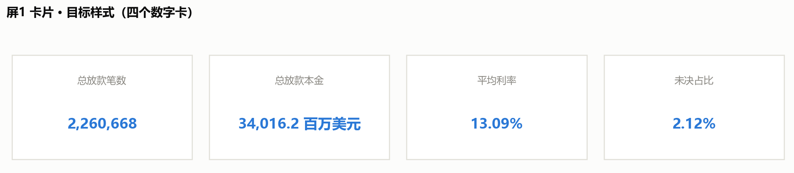
先把正确值抄在这里，做完逐个对照，一个都不能差：
| 卡片 | 正确值 |
|---|---|
| 总放款笔数 | 2,260,668 |
| 总放款本金 | 34,016.2（百万美元，约 340 亿） |
| 平均利率 | 13.09% |
| 未决占比 | 2.12%（注意：2018 单年是 7.7%，别混） |
| （可选）平均单笔 | 15,047 美元 |
如果你算出来正好是两倍（笔数 4,521,336、本金 68,032），
那就是合计行被算进去了：2,260,668 × 2 = 4,521,336。
如果看到「平均单笔 168,419」「未决占比 12」这种数，那是比率字段被 SUM 了。
两个都是下面这个坑，接着看。
⚠️ 合计行怎么排除（屏 1 唯一的坑）
s1_overview.csv 最后一行是合计行（放款年 = 合计（2007-2018））。
它已经把全样本汇总好了，所以两件事会同时出错：
- 不排除它 →
SUM会把 12 个年份和合计行一起加，数字正好翻倍； - 比率字段用 SUM → 平均利率变成 12 年的利率相加；
未决占比变成0+0+…+2.2+7.7+2.12 ≈ 12。
推荐做法：筛选器只留合计行（3 步）
- 把
放款年从左侧「数据」窗格，拖到「标记」卡片上方那一行的「筛选器」架上。 - 弹出的对话框里点 「无」把勾全部取消，然后只勾选「合计（2007-2018）」，确定。
- 如果 Tableau 问"是否显示筛选器"，选 「否」——我们只是拿它筛数，不需要它出现在图上。
做完四个数就对了。因为筛选后只剩一行，用什么聚合都一样，不必再操心 SUM 还是平均值。
这个筛选是工作表级的，只影响当前这张卡片的表，不会影响屏 1 的两张图。
图 1-A / 1-B 要显示全部年份，不要加这个筛选器。
备选做法：不用合计行，自己从 12 个年份算
如果你希望每个数都是自己算出来的，那就反过来排除合计行（第 2 步改成勾选 2007~2018、不勾合计），
再建三个计算字段：
平均利率_加权 = SUM([放款本金_百万] * [平均利率]) / SUM([放款本金_百万])
未决占比_加权 = SUM([未决]) / SUM([放款笔数]) * 100
平均单笔 = SUM([放款本金_百万]) * 1000000 / SUM([放款笔数])注意：放款笔数、放款本金_百万 这类"量"可以用 SUM；
但 平均利率、未决占比、平均单笔 这类"比率 / 均值"必须加权，不能 SUM。
这是 Tableau 最常见的坑之一——均值不能直接相加。
做出来之后：改数字格式 + 换成卡片版式
① 数字格式（不改的话会显示 13.086011224 这种长小数）
| 卡片 | 要显示成 |
|---|---|
| 放款笔数 | 2,260,668 |
| 放款本金 | 34,016.2 |
| 加权平均利率 | 13.09% |
| 加权未决占比 | 2.14% |
做法：右键视图里的数字 →「格式」，左侧会出现「格式」窗格 →
在「默认值」区把「数字」下拉改成 「数字(自定义)」 →
「小数位数」填 2，并勾上 「包括千位分隔符」（这样笔数才会显示成 2,260,668）。
② 版式：从"一列"变成"一排卡片"
你现在是「度量名称」放在行上，所以数字竖成一列。两种改法：
- 最快：把「度量名称」从「行」拖到「列」上 → 四个数字立刻横排。
然后在「格式」窗格里隐藏轴、去掉表头线、调大字号。 - 最好看（推荐）：做 4 张独立工作表，每张只放一个度量（拖到「文本」，不要放任何维度）。
点「标记」卡片上的 「文本」小方块，在「标记标签」对话框里把字号设成 20pt、加粗、居中。
然后在仪表板里把 4 张图并排拖成一排、等宽。
这是 Tableau 里做 KPI 卡的标准做法——每张卡的数字格式、字号、颜色都能单独控制。
③ 样例图上的那个"方框"怎么来
它不是画出来的，是仪表板容器的样式。 把图放进仪表板之后：
选中它 → 右侧「布局」窗格 → 设 「边界」（浅灰细线）和 「背景」（白色或浅灰），
再给一点内边距。四张卡用同一套设置，看起来就是一排卡片。
④ 为什么卡片会"小小一个"（关键原理）
Tableau 里字的大小由「字号」决定，不会跟着容器放大。
所以把工作表设成「整个视图」之后，文字还是原来那么大，只是周边留白变多——
看起来就是"缩在角落里一小块"。
想让它填满，要做的不是拖大容器，而是把字号调大：
| 做法 | 效果 |
|---|---|
| 字号调到 18–20pt + 列宽收到刚好 | 四行会一起变高，能占满 |
| 拆成 4 张独立工作表，每张字号 28pt | 数字居中在整张图里，天然填满（推荐） |
如果你继续用现在这张 4 行的表，还要顺手做两件事：
- 把「度量名称」那一列拖窄到刚好放下最长标签（"加权平均利率"），否则标签列会占掉一大半宽度；
- 去掉灰白相间的底纹：「格式」窗格 →「单元格」→ 把底纹设为「无」。
⑤ 三个容易忽略的细节
- 颜色用主色蓝
#2a78d6，别用橙色。 橙色在本项目里有语义——留给"没跟上 / 风险"
这类结论（比如屏 3 的定价缺口）。总览卡片用蓝色，全项目才一致。 - 标签用工作表标题。 独立工作表的话，保留「显示标题」、把标题文字改成"总放款笔数"就行，
比另外放文本对象省事。 - 单位必须写出来。 孤零零一个
34,016.2没人知道单位，标题要写
"总放款本金（百万美元）"。
图 1-A · 放款规模与利率（两个小倍数，不是双轴）
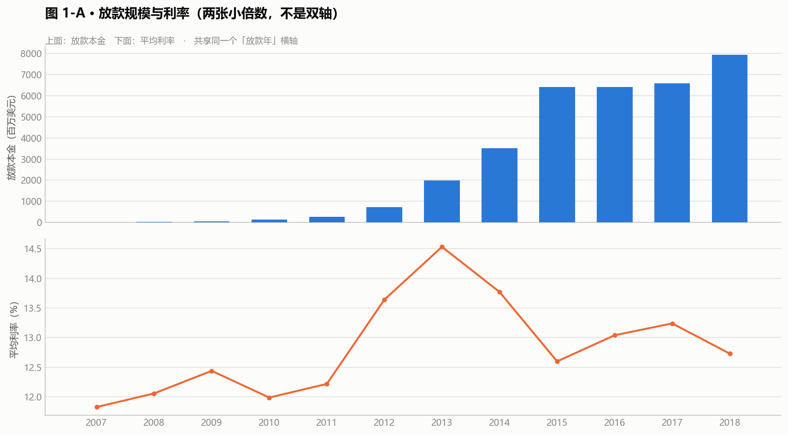
- 列：
放款年 - 行：
SUM(放款本金_百万)/ 第二个图用AVG(平均利率) - 标记：条形（本金图）/ 线（利率图）
- 做两张图并排，共享同一个
放款年轴。不要叠在一张图上。
图 1-B · 三种状态的占比
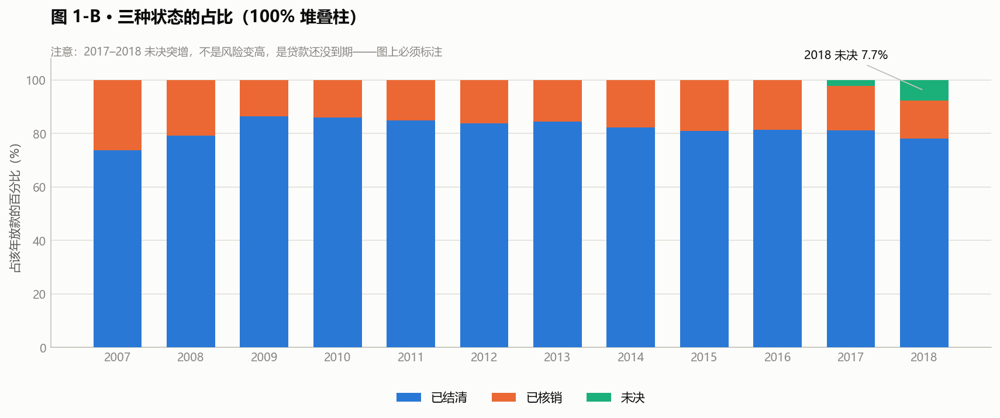
注意筛选器方向和卡片相反：这张图要排除「合计（2007-2018）」那一行，
否则会多出一根"合计"柱。卡片是"只留合计行"，这里是"排除合计行"。
第一步：把三个度量拖进来
同时选中 已结清、已核销、未决 三个度量 → 一起拖到「行」。
Tableau 会自动生成 「度量名称」和「度量值」 两个字段。
放款年→ 「列」度量名称→ 「颜色」（这一步做完才是三个系列）
第二步：转成百分比（这一步是关键）
这三个字段是绝对笔数（78 笔 / 158 笔 / 38356 笔这种量级），
直接拖出来是一堆数量级差很远的长条，看不出结构。必须转成"占该年放款的百分比"：
做法 A · 快速表计算（快）
- 右键「行」上的「度量值」 → 「快速表计算」→「总额百分比」
- 再右键「度量值」 → 「计算依据」→「表(向下)」
验收标准：每一年的三个数加起来必须等于 100%。
如果没到 100%（比如被按年份横向算了），就把「计算依据」换成另一个方向再试。
「计算依据」是表计算最容易搞错的地方——别背方向，记住"加起来 = 100%"这个验收标准。
做法 B · 自己建三个计算字段（更稳，不会算错方向）
已结清占比 = SUM([已结清]) / (SUM([已结清]) + SUM([已核销]) + SUM([未决])) * 100
已核销占比 = SUM([已核销]) / (SUM([已结清]) + SUM([已核销]) + SUM([未决])) * 100
未决占比 = SUM([未决]) / (SUM([已结清]) + SUM([已核销]) + SUM([未决])) * 100再把这三个计算字段一起拖到「行」，「度量名称」放颜色。
代价是要建三个字段，好处是永远不会算错方向——而且公式明写在明面上，
面试官问"这个百分比怎么来的"，你点开就能说。
第三步：用堆叠柱，不要并排柱
- 「分析」菜单 →「堆叠标记」（设成「自动」或「开」）
- 「标记」卡片 →「大小」可以调柱子粗细
为什么不并排？ 已结清约 80%、已核销约 18%、未决 0~7.7%——
并排柱放在同一根 0~100% 的轴上，未决那根几乎看不见。
换成 100% 堆叠柱之后，未决是柱顶那一小段，从 0 长到 7.7% 一眼就看得出来。
第四步:格式
- 纵轴设成 0~100%，数字格式小数位 0
- 三个类别正好用满三个分类色（蓝 / 橙 / 绿），不要更多
- 图例放底部横排，不要压到柱子上
为什么 2017–2018 的柱子看着矮？
为什么 2017–2018 的柱子看着矮？
因为它们的贷款还没走完，未决占比高。
这一屏必须放一个大字说明：
"2017–2018 队列尚未结清，占比不可与早期队列直接比较。"
不加这句，看图的人一定会得出"近年质量在改善"的错误结论——
那只是时间不够，不是风险变低。
四、屏 2 · 放款质量（Vintage）
数据源：s2a_vintage_curve.csv + s2b_grade_mix.csv + s2c_effect_split.csv
图 2-A · 队列曲线（这张是整个项目最重要的一张）
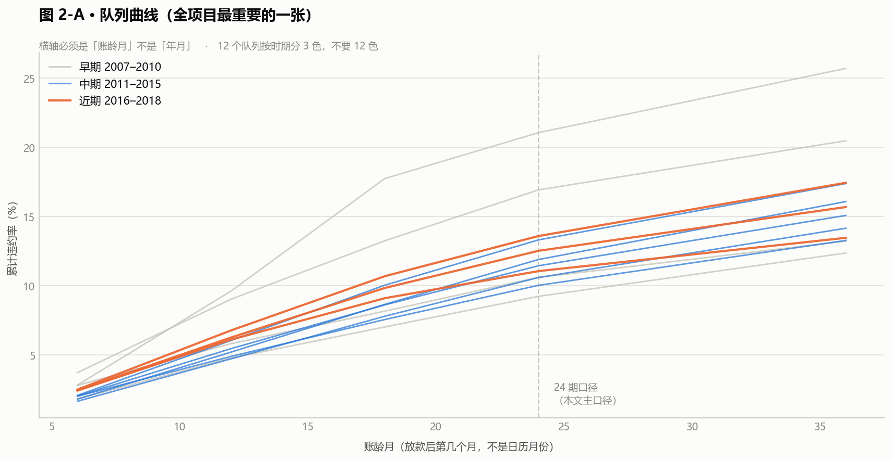
- 列：
账龄月（不是日期，是账龄） - 行：
累计违约率_官方口径 - 颜色：
放款年 - 标记：线
⚠️ 横轴必须是「账龄月」，不是「年月」。
这是 vintage 曲线的全部意义所在：它把每个队列对齐到"从放款起算的第几个月"，
这样 2010 年和 2018 年的队列才能在同一个横坐标上比。
如果横轴用日历月份，这张图就废了——
2018 年的队列只会画出短短一段，看起来像"违约率暴涨"。
颜色的处理：12 个队列，远超 3 个分类色的上限。
处理方式：按"时期"分组——
| 组 | 队列 | 颜色 |
|---|---|---|
| 早期 | 2007–2010 | #c8ccd2 灰 |
| 中期 | 2011–2015 | #2a78d6 蓝 |
| 近期 | 2016–2018 | #e8833a 橙 |
不要在 12 个队列上各给一个颜色。 12 条彩虹线放在一起，
没人能看出哪条是哪条，图例也会变成一列不可能读完的清单。
图 2-B · 等级构成（辛普森悖论的证据）
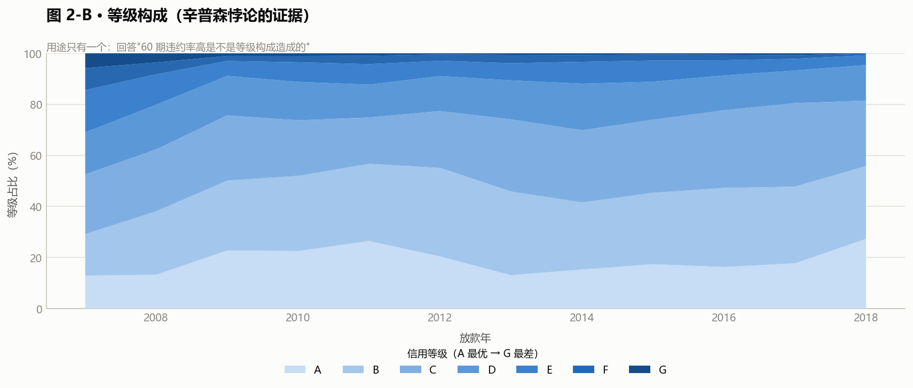
- 列：
放款年 - 行：
等级占比_百分比 - 颜色：
等级 - 标记：堆叠面积图或堆叠柱
这张图的唯一用途是回答一个追问：
"你说 60 期违约率高是等级构成造成的，构成到底变了多少？"
答案在这张图上：A 级占比从 2010 年的高位一路塌下去。
图 2-C · 效应拆解
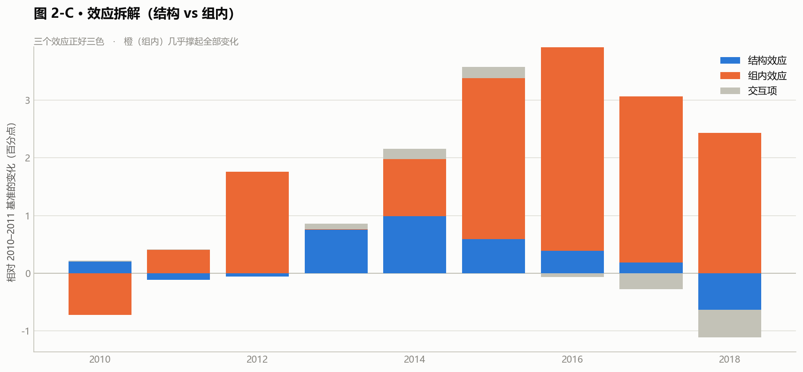
- 列：
放款年 - 行：
贡献pp - 颜色：
效应（结构效应 / 组内效应 / 交互项） - 标记：堆叠柱
三个效应正好三色。这张图说明"总变化里有多少是构成变化、多少是真实恶化"。
五、屏 3 · 定价与收益
数据源：s3a_grade_term.csv + s3b_cohort_pnl.csv + s3c_pricing_gap.csv
图 3-A · 等级 × 期限的毛价差
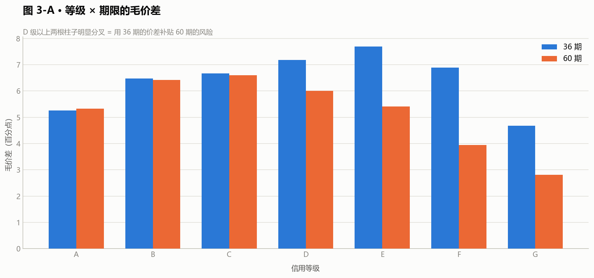
- 列：
信用等级 - 行：
毛价差 - 颜色：
期限（36 / 60，两个类别） - 标记：并排柱
这张图一眼就能看出问题：D 级往上，
36 期和 60 期的柱子高度明显分叉——A/B/C 几乎等高，D 以上 60 期矮一截。
这就是"用 36 期的价差补贴 60 期的风险"。
图 3-B · 各队列实际盈亏（必须带"可比性"维度）
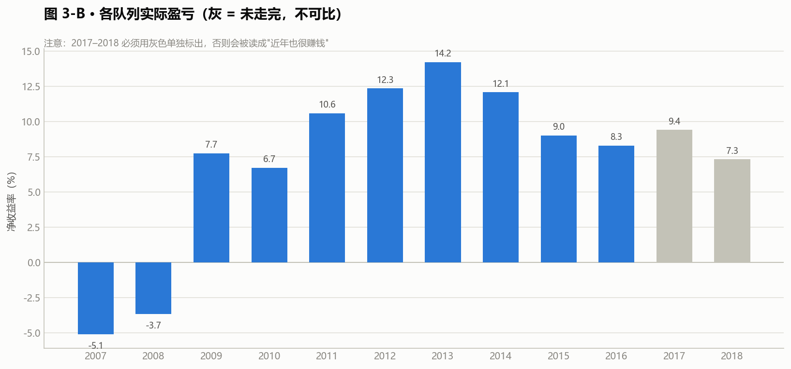
- 列：
放款年 - 行：
净收益率 - 颜色：
是否可比（可比 / 不可比（未走完）） - 标记：柱
⚠️ 这张图的重点全在颜色上。
2017–2018 那两个数是不可比的（贷款没走完，
利息只收了一半、坏账还没爆完），必须用灰色单独标出来。
如果全部一个颜色连成一条线，看图的人会以为"近年也很赚钱"。
图 3-C · 定价缺口
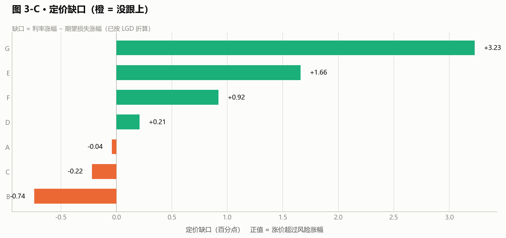
- 行：
信用等级 - 列：
定价缺口pp - 标记：条形
- 颜色：设一个计算字段把正负分开（负 = 橙，正 = 灰）
缺口方向 = IF [定价缺口pp] < 0 THEN '没跟上' ELSE '跟上了' END
这一屏和屏 1 一样，必须放大字说明：
"缺口 = 利率涨幅 − 期望损失涨幅（已按 LGD 折算）。
不折算 LGD 的话七个等级全是负缺口，结论会完全反过来。"
六、屏 4 · 风险分群
数据源：s4_segments.csv（94 行，字段 × 分箱）
先用筛选器隔离两个变量
这一屏和其他屏最大的不同：不能把所有字段的分箱混在一张图里。
做法是在仪表板上放一个「特征」参数 / 筛选器，
默认只勾选 01 信用等级，用户想换再看别的。
图 4-A · 违约率与置信区间
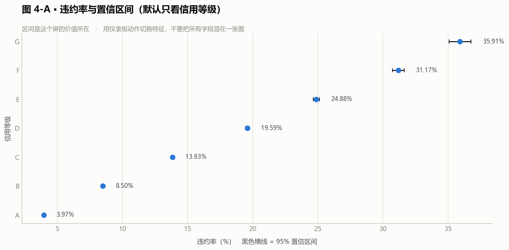
- 列：
违约率，同时把违约率下界95和违约率上界95拖进「标记 → 详细信息」 - 行：
分箱 - 标记：线（或圆）
- 做法：用「分析」窗格里的「预测」不行（那是给趋势线的），
这里用两个额外的圆点上下界 + 参考线，
或者更省事的办法：转成「甘特图/范围图」——
行放分箱，列放下界（转成负数）和上界做堆叠条。
区间是这个屏的价值所在。 没有区间，
"婚礼这个用途违约率只有 8.83%"看起来像一条结论；
有区间（7.75% ~ 10.05%）才知道这个箱子只有 2,355 笔，不能当结论用。
图 4-B · IV 排名
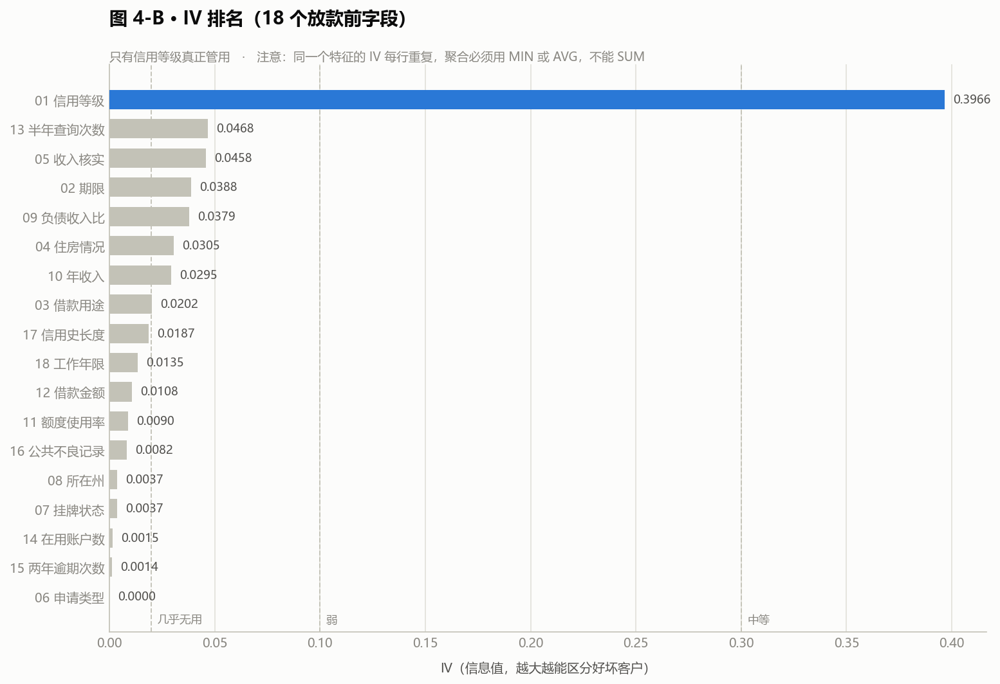
- 行：
特征（必须勾选「按 IV 排序」） - 列：
IV（用 MIN 或 MAX，不要 SUM——
IV 在同一个特征的每一行都是重复值，SUM 会乘以分箱数） - 标记：条形
⚠️
s4_segments.csv里IV是每个分箱行都重复一遍的。
直接拖进去 Tableau 默认用 SUM 聚合，会把 IV 乘以分箱数。
必须改成 MIN 或 MAX，或者用AVG。
分级虚线：在 0.02 / 0.10 / 0.30 三处加参考线，
标注"几乎无用 / 弱 / 中等"。
七、屏 5 · 行动看板
数据源：s5_actions.csv
布局：三条建议横着排成三列，每列下面挂自己的指标表。
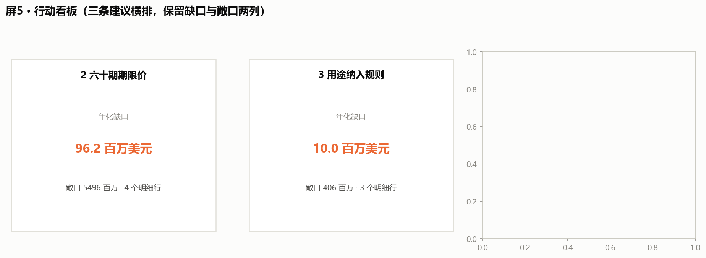
- 列：
建议 - 行：
指标/维度 - 文本：
数值 - 标记：文本
底部放一张「监控基期值」表，就是文档 05 第五节那张表。
这一屏是给面试看的。 前四屏回答"发生了什么"，
这一屏回答"所以呢"。
一定要保留"年化缺口_百万美元"和"敞口_百万美元"两列——
它们是"这条建议值多少钱"的全部依据。
八、仪表板组装
8.1 把图拖进去
做成一个大仪表板，五个页签（Tab）——不要做成五个独立的仪表板文件。
页签是「新建仪表板 → 左下角新建页签」，拖工作表进去就行。
| 页签 | 标题文本框内容 |
|---|---|
| 1 放款总览 | 放款总览 · 2007–2018 共 226 万笔、340 亿美元 |
| 2 放款质量 | 放款质量 · 趋势是倒 U 形，恶化来自等级内部 |
| 3 定价与收益 | 定价与收益 · B/C 级没跟上，60 期漏掉了 LGD |
| 4 风险分群 | 风险分群 · 18 个字段里只有信用等级真正管用 |
| 5 行动看板 | 行动看板 · 三条建议，年化缺口合计量级约 1 亿美元 |
字号：标题 20pt 加粗，副标题 12pt 灰色，正文字段 10pt。
不要用 Tableau 默认的自动字号——它在不同屏幕上会缩放到看不清。
每屏的图不要超过 3 张。 一个塞了 8 张图的仪表板，
读的人第一眼就放弃了，等于没做。
8.2 ★ 仪表板动作：让一个筛选器管住整屏
这是"一个看板"和"一堆图"的分界线，必须做。
表格式的静态图 matplotlib 也能出，Tableau 的价值就在联动。
做法：仪表板 → 操作 打开动作对话框 → 添加操作 → 选 「筛选器...」，然后
| 源工作表 | 目标工作表 | 触发方式 | 筛选字段 |
|---|---|---|---|
| 屏 2 的等级构成图 | 屏 2 的队列曲线 | 选择（点一下） | 等级 |
| 屏 3 的缺口图 | 屏 3 的等级×期限价差 | 选择 | 信用等级 |
| 屏 4 的 IV 排名 | 屏 4 的分箱置信区间图 | 选择 | 特征 |
屏 4 的那条是最该做的。 现在做的"用筛选器隔离字段"要用户自己去下拉框里挑；
换成动作之后，点一下 IV 排名里的某根柱子，下面那张图立刻变成那个字段的分箱。
这个交互一演示，Tableau 的能力就不用再解释了。
做完一定要自己点几下验证：点空白处剩一张空图 = 动作的"清除选择"没配，
在动作对话框底部把 「清除选定内容将会」 设为 「显示所有值」。
8.3 参数：屏 4 的字段切换
如果不用动作，也可以放一个参数做字段切换：
创建参数 → 数据类型选「字符串」→ 允许值 选「列表」→ 手动填 18 个字段名
→ 建一个计算字段做映射 → 拖进筛选器。
参数和筛选器都要做，但优先级：动作 > 参数。
动作能演示"联动"，参数只能演示"切换"，前者含金量高得多。
8.4 首屏放不下的说明，用「浮动」文本框
Tableau 里文本框默认是"平铺"的，会把图挤变形。
在屏 1（未决不可比） 和屏 3（LGD 折算） 这两处，
右键文本框 → 浮动，然后手动拖到图上的空白位置。
浮动对象在仪表板左侧的列表里能调层级。
九、截图存档
五屏做完后，仪表板 → 导出图像，存到 output/charts/，命名：
dashboard_1_overview.png
dashboard_2_quality.png
dashboard_3_pricing.png
dashboard_4_segments.png
dashboard_5_actions.png截图用来看的，不是用来交差的。 存完自己从头翻一遍，
重点看三件事：
- 有没有文字压住图形（两个标签撞在一起）；
- 有没有图例缺失（两个及以上系列没图例）；
- 有没有该标"不可比"的地方没标（尤其是屏 1 的 2017–2018）。
十、这个看板在面试里怎么用
不要从头到尾翻一遍。 挑三张讲，中间动一次手：
- 屏 2 的队列曲线 —— 讲 vintage 固定账龄法，
讲为什么横轴必须是账龄不是日历。 - 屏 3 的缺口图 —— 讲 LGD 折算，讲"不折算结论会反"。
- 屏 4 点一下 —— 真的点一下 IV 排名里的"信用等级"那根柱子，
让下面那张图当场变成 A~G 的分箱违约率和置信区间。
然后说一句："这一屏我把 18 个字段都放进来了，
因为只展示最好看的那个字段，等于替观众做了选择。" - 屏 5 的行动看板 —— 讲"换算不出动作的结论就还只是观察"。
第 3 步是整场演示里唯一一次动手，也是唯一能证明"这不是截图"的动作。
只翻静态图，面试官无法区分这是你做的还是你截的。
其余两屏如果有人问再翻。看板是做给自己理清思路的，
不是做给面试官看的连续剧。
被问"你这个看板有什么难的"时
别答"用了多少个图"。答这个：
"难的不是画图，是在图上标注哪些地方不能比。
屏 1 的 2017–2018、屏 3 的未成熟队列、屏 4 的置信区间——
这几处如果不标，图会自己讲出一个错误的结论，
而且看起来很漂亮、不会报错。
一个看板最危险的不是画错，是画对了但让人读错。"